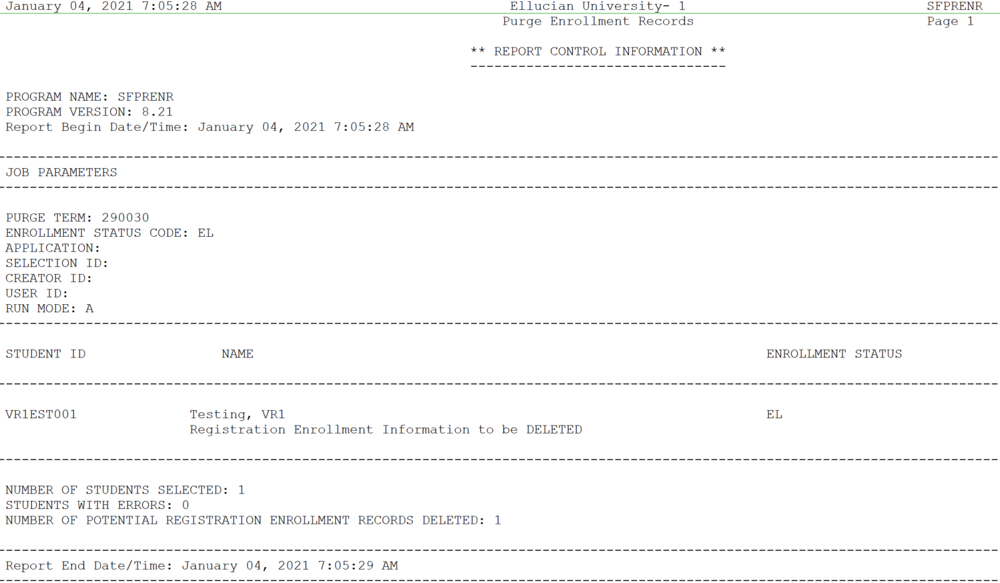

Registration
Assign Registration Pin Process (SFRAPIN)
A new job process SFRAPIN is created to assign a registration pin for a specified term to a defined set of students.
Institutions use this functionality to “force” a student to contact an advisor, who will provide the PIN, before initially registering for the term. When a student tries to register for the first time (through either the Add or Drop Classes page or the Look Up Classes results page), if alternative PIN processing is turned on and an alternative PIN is entered for the student on the Alternate Personal Identification Number Form (SPAAPIN), then the system displays the Alternate PIN Verification page. (If no alternative PIN is entered on SPAAPIN, the system displays the requested page without displaying this page first.)
You can run the job multiple times, however the log file does not display any students to process. In such cases you can sign in to SPAAPIN, select the student associated with the term and delete the record, or you can sign in to the oracle table SPRAPIN and select the relevant record by providing the student pidm and term and delete the record. After this task you can run the SFRAPIN process to generate the new PINs. You can assign the same pin range to students belonging to different degrees along with other optional parameters. Pin allocation happens on a random basis.
Banner does not have any report to display the student associated with alternate pins; however, you can sign in to Banner page SPAAPIN by entering the term and the student ID to see the student associated with the PIN.
SFRAPIN allows you to do the following:
- Use multiple student parameters like Degree code, Student level code, Classification code, Minimum hours earned, Maximum hours earned and so on to filter, or by using population selection parameters such as Application, Selection ID, Creator ID and User ID to filter for the predefined population selection.
- Set a PIN start range and end range, which will be assigned to the defined set of students filtered using either Student parameters or Population selection parameters.
The students are identified on the given filter criteria and randomly assigned with a PIN, within the mentioned start and end range. For example if 000000 is the start range and 111111 is the end range, and if there are 2 students, they can be assigned with 000010 and 002001 in random, which is within 111111.
- Run the process in Audit or Update mode.
| Parameter Name | Required? | Description | Values |
|---|---|---|---|
| Registration Term | Yes | Enter the term code for which group needs to be created. | Term Code Validation (STVTERM) |
| Alternate Pin Range - START | Yes | Enter the starting range of the Alternate PIN. | Value from 1 - 999999 Process Submission Controls (GJAPCTL) |
| Alternate Pin Range - END | Yes | Enter the ending range of the Alternate PIN. | Value from 1 - 999999. End range must not be less than Start range. Process Submission Controls (GJAPCTL) |
| Student Level Code | No | Enter the student level code (such as undergraduate or graduate) for which you want to filter the students to be assigned with the PIN. |
Level Code Validation (STVLEVL) |
| Degree Code | No | Enter the student's degree code for which you want to filter the degree assigned with the PIN. | Degree Code Validation (STVDEGC) |
| Student Type | No | Enter the student type code for which you want to filter the student type assigned with the PIN. | Student Type Code Validation (STVSTYP) |
| Attribute Code | No | Enter the attribute code for which you want to filter the attribute assigned with the PIN. | Attribute Code Validation (STVATTS) |
| Classification Code | No | Enter the classification code for which you want to filter the classification assigned with the PIN. | Classification Code Validation (STVCLAS) |
| Minimum Hours Earned | No | Enter the minimum hours earned for the student. | The Minimum Hours Earned is a parameter to filter the students as per the students hours earned value. |
| Maximum Hours Earned | No | Enter the maximum hours earned for the student. | The Maximum Hours Earned is a parameter to filter the students as per the students hours earned value. |
| Application Code | No | Enter the code that identifies the general area for which the selection identifier was defined. All or none of the population selection parameters must be entered. The Population Selection Extract Inquiry Form (GLIEXTR) may be used to review the people who will be processed in the load from the selection identifier and application code entered. |
Application Inquiry Form (GLIAPPL) |
| Selection Identifier | No | Enter the code that identifies the population with which you want to work. The selection identifier must be defined on the Population Selection Inquiry Form (GLISLCT). All or none of the population selection parameters must be entered. | Population Selection Inquiry Form (GLISLCT) |
| Creator ID | No | Enter the user ID of the person creating the sub-population rules. The creator ID must have been specified when defining the selection identifier. All or none of the population selection parameters must be entered. | Creator ID is optional to run with the population selection. |
| User ID | No | Enter the user ID for the population selection. This will match the creator ID and is the Banner logon user ID. All or none of the population selection parameters must be entered. | User ID is optional to run with the population selection. |
| Run Mode | Yes | Enter A to run in Audit mode and print an audit report for fee assessment. Enter U to update the database records. The default is A. | A - Audit mode (default) U - Update mode |
View the SFRAPIN process reports
You can run the SFRAPIN process to generate and assign Registration pins to students.
Procedure
-
To review the log file, perform the following steps:
-
From the top panel, click the Related icon
 .
.
-
From the top panel, click the Related icon
Assign Time Ticketing Group Process (SFRGRUP)
Registration Time-Ticketing allows institutions to optionally establish priority driven registration period time slots for registration through Banner Student Self-Service registration.
You can use the SFRGRUP process to automate the building of registration group codes and assign those codes to students who are eligible to register for a specified term.
You cannot assign a student on this form if you define a registration group and not prioritize it. You can assign only one registration group to a student for a specific term. You cannot make registration group assignments when the student status for the selected term does not allow registration (that is, the Allow Registration flag on the Student Status Code Validation Form (STVSTST) is cleared or has N status).
SFRGRUP allows you to do the following:
- Use multiple student parameters like Degree code, Student level code, Classification code, Minimum hours earned, Maximum hours earned and so on to filter, or by using population selection parameters such as Application, Selection ID, Creator ID and User ID to filter for the predefined population selection.
- Run the process in Audit or Update mode.
- Creates student registration group records (SFBRGRP) for every general student in the database whose student status (
SGBSTDN_STST_CODE) allows registration (STVSTST_REG_IND = Y). (These students represent the IDs that will be entered in the Key Information of SFARGRP). - Creates registration group code records (SFBWCTL) and assigns the appropriate code to each of the students (SFBRGRP) based on the values entered in the job parameters.
| Parameter Name | Required? | Description | Values |
|---|---|---|---|
| Registration Term | Yes | Enter the term code for which group needs to be created. | Term Code Validation (STVTERM) |
| Group Code | Yes | Enter the student's group code. The group codes are created in the Registration Group Control Page (SFARCTL) and assigned to the students who are eligible to register. | Maximum character length for Group Code is 10. |
| Maximum Students Per Group | Yes | Enter a value for maximum students per group. | Number of students in each group. On reaching maximum students per group, a new group is created by appending suffix starting from 01. |
| Student Level Code | No | Enter the student level code (such as undergraduate or graduate) for which you want to filter the students to be assigned with the group. | Level Code Validation (STVLEVL) |
| Degree Code | No | Enter the student's degree code for which you want to filter the degree assigned with the group. | Degree Code Validation (STVDEGC) |
| Student Type Code | No | Enter the student type code for which you want to filter the student type assigned with the group. | Student Type Code Validation (STVSTYP) |
| Attribute Code | No | Enter the attribute code for which you want to filter the attribute assigned with the group. | Attribute Code Validation (STVATTS) |
| Classification Code | No | Enter the classification code for which you want to filter the classification assigned with the group. | Classification Code Validation (STVCLAS) |
| Minimum Hours Earned | No | Enter the minimum hours earned for the student. | The Minimum Hours Earned is a parameter to filter the students as per the students hours earned value. |
| Maximum Hours Earned | No | Enter the maximum hours earned for the student. | The Maximum Hours Earned is a parameter to filter the students as per the students hours earned value. |
| Application Code | No | Enter the code that identifies the general area for which the selection identifier was defined. All or none of the population selection parameters must be entered. The Population Selection Extract Inquiry Form (GLIEXTR) may be used to review the people who will be processed in the load from the selection identifier and application code entered. |
Application Inquiry Form (GLIAPPL) |
| Selection Identifier | No | Enter the code that identifies the population with which you want to work. The selection identifier must be defined on the Population Selection Inquiry Form (GLISLCT). All or none of the population selection parameters must be entered. | Population Selection Inquiry Form (GLISLCT) |
| Creator ID | No | Enter the user ID of the person creating the sub-population rules. The creator ID must have been specified when defining the selection identifier. All or none of the population selection parameters must be entered. | Creator ID is optional to run with the population selection. |
| User ID | No | Enter the user ID for the population selection. This will match the creator ID and is the Banner logon user ID. All or none of the population selection parameters must be entered. | User ID is optional to run with the population selection. |
| Run Mode | Yes | Enter A to run in Audit mode and print an audit report for fee assessment. Enter U to update the database records. The default is A. | A - Audit mode (default) U - Update mode |
View the SFRGRUP process reports
You can run the SFRGRUP process to generate and assign groups to students.
Procedure
-
To review the log file, perform the following steps:
-
From the top panel, click the Related icon .
-
From the top panel, click the Related icon
Registration Fee Assessment Process (SFRFASC)
This process is used to run batch processing of registration fee assessments and to migrate from the old processing (SFRFASM or SFRFAS1). Running SFRFASC will provide the most recent assessment data for the audit history table. SFRFASC allows you to do the following.
- Use a population selection.
- Process assessments for a single ID or a list of IDs.
- Use an enrollment status (E) or collector mode (C).
- Print audit records (A), student accounting records (T), or both (B).
- Use separate date parameters for refunding by total versus effective dating of assessments.
- Run the process in Audit or Update mode.Note: When you are migrating from the old processing to the current processing, the Create Accounting Records parameter should be set to N, to not insert TBRACCD records into accounting. The Run Mode parameter should be set to U (Update) to update the database.
SFRFASC runs in conjunction with the settings of the Registration Fee Assessment On-line (Indicator) and the Web Self-Service and Voice Response Assessment On-line (Radio Group) on SOATERM.
- When registration records are processed through self- service and through SFAREGS, and the Registration Fee Assessment On-line (Indicator) is unchecked (set to N) and the Web Self-Service and Voice Response Assessment On-line (Radio Group) is set to Not Available (meaning no assessment information has been recorded), then this process should be run for all students within a term.
- When the Registration Fee Assessment On-line (Indicator) is checked (set to Y), indicating that online fee assessment is available, then this process should be run in collector mode, in case online assessment has been deferred due to the process option setting of the Fees field on SFAREGS being changed to N (Batch for Updates) or B (Batch Only), instead of using the default setting of Y (Immediate).
- Fee assessment can also be deferred using the Registration Mass Entry Form (SFAMREG).
- When the Registration Fee Assessment On-line (Indicator) on SOATERM has been checked (set to Y), it should remain checked.
Batch fee assessment can be run in either Update mode or Audit mode. Use Update mode to post the charges on the student's account (TBRACCD record) for the term. You may want to use Audit mode to print a report of what the assessment results would be if the process was run in Update mode. SFRFASC uses assessment rules defined on the Registration Fee Assessment Rules Form (SFARGFE), in addition to as any fees posted through the Registration Additional Fees Control Form (SFAAFEE), to calculate registration-related charges.
The output from SFRFASC can be printed in either name or ID order and includes the detailed transactions that have been posted to the student's account record. If you have chosen to display the audit history records, that information will also be printed on the output. These printed charges result from the entries made in registration and show the effective dates and net change to the student's account. The audit history entries show the actual date of the assessment, not the effective date. Whenever fee assessment is run in Update mode, information about the student's assessment is placed in the audit history table.
Before a student bill is produced using the Student Invoice/Billing Statement (TSRCBIL), you must have assessed registration fees either through batch or online processing. You have the option to create a schedule/bill collector record during batch fee assessment processing for any students with a change in fee assessment (either additional charges or credits). Collector records will not be written for students who do not have any changes. To create schedule/bill collector records, enter Y in the Add Invoice Collector Record parameter.
If you are running batch fee assessment from the command line, the error message Invalid request; Update student account not requested will not be displayed if you enter N in the Create Accounting Records parameter (displayed on the command line as Create Accounting Detail Records) but then enter Y for the Add Invoice Collector Record parameter. Because you are not creating any changes to the student's accounting records, the collector record for student bills is not populated. If schedule/bill collector records are needed, both the Create Accounting Records and Add Invoice Collector Record parameters must be set to Y.
If collector records are created, they may be used either for processing student bills in invoice mode or student schedule/bills through the Student Invoice/Billing Statement (TSRCBIL). If it is anticipated that the collector records will be processed by TSRCBIL in sleep/wake mode, an appropriate value should be entered for the Printer parameter. This value should be one of the valid printer selections from the Printer Validation Form (GTVPRNT) which has been specifically set up by your institution for use with sleep/wake processing. If you are not using sleep/wake processing, enter any valid printer code to populate the collector records. The same code should be entered for the Printer parameter in TSRCBIL.
| Parameter Name | Required? | Description | Values |
|---|---|---|---|
| Term | Yes | Enter the registration term for which fee assessment is to be processed. | Term Code Validation Form (STVTERM) |
| Assessment Date | No | Enter the date (in format DD-MON-YYYY) to be used as the effective date for all of the fee assessment transactions generated by this process. | |
| The following hierarchy is used when assigning the effective date: first - the date in the Registration Fee Assessment Effective Date field on SOATERM, second - the date in this parameter, and third - the Banner system date. The date options are also affected by the settings of two fields on the Student Billing Control Form (TSACTRL): the Effective Date radio group Current Date or Date of Charges options and the Accept Charges (Indicator). When the Effective Date field on TSACTRL is set to Date of Charges (C), and a future date exists in SOATERM or in this parameter, the future date will always be used. If the Effective Date field on TSACTRL is set to Current Date (T), and a future date is chosen, if the Accept Charges (Indicator) for the student is checked (set to Y), today's date will be used, even if this parameter is set to a future date or a future date exists on SOATERM. |
|||
| Student ID | No | Enter the student’s ID when you are running the assessment process for a single ID. | |
| Application Code | No | Enter the code that identifies the general area for which the selection identifier was defined. All or none of the population selection parameters must be entered. The Population Selection Extract Inquiry Form (GLIEXTR) may be used to review the people who will be processed in the load from the selection identifier and application code entered. |
Application Inquiry Form (GLIAPPL) |
| Selection Identifier | No | Enter the code that identifies the population with which you want to work. The selection identifier must be defined on the Population Selection Inquiry Form (GLISLCT). All or none of the population selection parameters must be entered. | Population Selection Inquiry Form (GLISLCT) |
| Creator ID | No | Enter the user ID of the person creating the sub-population rules. The creator ID must have been specified when defining the selection identifier. All or none of the population selection parameters must be entered. | |
| User ID | No | Enter the user ID for the population selection. This will match the creator ID and is the Banner logon user ID. All or none of the population selection parameters must be entered. | |
| Batch Type | No | Enter C to process all entries from the SFRBTCH collector table. Enter E to define a group of students for assessment by enrollment status. | C - Collector E - Enrollment status |
| Select the enrollment status code using the Enrollment Status parameter. Whenever an assessment is processed for a student or term, or both, no matter how the assessment is invoked, maintenance is performed on the SFRBTCH collector table for the student and term being processed. If a collector record exists for the student or term, or both being assessed, the collector record is deleted. (The purpose of the collector record is to make sure the student is assessed.) When assessment is run using a batch type of C (collector), all records in SFRBTCH for the term specified will be processed and subsequently deleted from the table. | |||
| Enrollment Status | No | Enter the enrollment status code for the fee assessment or leave blank for all. | Enrollment Status Code Validation Form (STVESTS) |
| Full or Part Time Indicator | Yes | Enter the student course load for the assessment. Enter F for full-time, P for part-time, or enter % for all. The default is %. This parameter looks at the value in the |
F - Full-time P - Part-time % - All |
| Assessment Type Rule | Yes | Enter the rule type to use for the assessment. Enter P for a pre-registration bill or R for registration rules. The default is R. | P - re-registration bill R - Registration |
| Accounting Detail to Print | Yes | Enter the student accounting detail to be printed on the assessment. Enter C to print the current student accounting only, A for all student accounting for the term, or N for no student accounting detail. The default is C. | C - Current student accounting only A - All student accounting for term N - None |
| Report Type | Yes | Enter the report type for the assessment. Enter A for audit history records only, T for TBRACCD (student accounts receivable charges and payments) records, or B for both. The default is T. | A - Audit history records only T - Student Accounts Receivable records B - Both |
| Sort Order | Yes | Enter the sort order for the report detail. Enter N to sort by name or I to sort by student ID. The default is N. | N - Sort by name I - Sort by student ID |
| Add Invoice Collector Record | Yes | Enter Y to create a TBRCBRQ (invoice collector) record or N to not create an invoice collector record. The default is N. No collector records for student schedule/bills will be created if the Create Accounting Records parameter is set to N. |
Y - Add invoice collector record N - Do not add invoice collector record |
| Invoice Printer | No | Enter the code for the destination printer where the invoice is to be printed. | Printer Validation Form (GTVPRNT |
| Create Accounting Records | Yes | Enter Y to create TBRACCD (student accounts receivable charges and payments) student accounting records or N to not determine the student accounting information based on the assessments. The default is Y. Schedule/bill collector records will not be created unless this parameter and the Add Invoice Collector Record parameter are both set to Y. |
Y - Create student accounting records N - Do not create student accounting records |
|
Warning: When the Create Accounting Records parameter is set to N and the Run Mode parameter is set to U, SFAFAUD records are created for the assessed students, but the charges are not transferred to TSAAREV. If this is noticed before the next run of SFRFASC, deleting the newly created SFAFAUD records and re-running SFRFASC will update TSAAREV. However, if subsequent runs of SFRFASC have been performed before the error is discovered, there is no method available to update TSAAREV, and the charges will have to be posted manually.
|
|||
| Refund by Total Refund Date | No | Enter the date of the refund by total refund period in format DD-MON-YYYY. This date establishes the percent refund to be used for any dropped courses as determined by the SFARFND table. If you are using refund by total, and no date is provided here, and there are unprocessed dropped courses that qualify for refunds, the refunds will not be calculated. |
|
| Run Mode | Yes | Enter A to run in Audit mode and print an audit report for fee assessment. Enter U to update the database records. The default is A. | A - Audit mode U - Update mode |
Purge Fee Assessment Audit Process (SFPFAUD)
This process is used to purge audit history records from the database.
- Run the purge process for range of dates for transactions, for a specific term, or for an ID.
- Keep only the last assessment records.
- Print summary or detail information.
- Run the purge in Audit or Update mode.
The last assessment should be kept when the current term is active and additional assessments are going to occur for that term. If all records are purged for a given term and section fees or other additional fees exist, fee assessment may need to be run twice to ensure accurate assessment.
This process prevents the intermediate assessment audit that is created to handle records with a status of DD from being purged. These interim records will not be purged until a flat charge rule qualification has re-occurred. This will ensure that future assessments will have accurate previous assessment records available for fee assessment processing.
The process deletes SFRFAUD rows for qualified students by assessment rule type (STUDENT, LEVEL, CAMPUS, ATTR). The processes considers if a student has had prior flat rule qualification but has been reassessed due to having a drop/delete issued. Because the student's assessment in essence starts over when the drop/delete is realized by assessment, any prior assessment audit records that record prior flat charge rule qualification can be safely purged.
SFPFAUD first determines if a drop/delete scenario has been handled by assessment. If it has, any assessment audit before the drop/delete being handled can be purged. The process checks to see if a date is found for when a drop/delete was handled, and then goes on to delete all assessment audit before the drop/delete, making sure to retain the last assessment audit.
| Parameter Name | Required? | Description | Values |
|---|---|---|---|
| Term Code | Yes | Enter the registration term code for which fee assessment audit history records are to be purged. | Term Code Validation Form (STVTERM) |
| Transaction Start Date | No | Enter the date for the beginning of the range for which fee assessment audit history records are to be purged. Use format DD-MON-YYYY. | |
| Transaction End Date | No | Enter the date for the end of the range for which fee assessment audit history records are to be purged. Use format DD-MON-YYYY. | |
| Student ID | No | Enter the ID of the student for which fee assessment audit history records are to be purged. | |
| Retain Last Assessment Audit | Yes | Enter Y to retain audit history records for the last assessment. Enter N to not retain audit history records for the last assessment. The default is Y. Warning: The last assessment audit history records are used by the fee assessment process to perform critical refund by total and refunding with flat and overload hour calculations. Purging all records may result in incorrect assessments when fee assessment is run again.
|
Y - Keep last assessment N - Do not keep last assessment |
| Report Type | Yes | Enter D for a detailed report with student ID and name, or enter S for a summary report (record count). The default is S. | D - Detail report S - Summary report |
| Run Mode | Yes | Enter A to produce a listing of all selected purge data without affecting the database. Enter U to update the database after purging the selected data. The default is A. | A - Audit mode U - Update mode |
Unduplicated Headcount Report (SFRHCNT)
This report produces headcount totals by level and major for all students for the term who have a student registration status (STVESTS) with the Affect Headcount check box checked (set to Y).
Other data for each level/major group includes campus, session residency, sex, ethnic code, and classification. A grand total of all enrolled students is also reflected.
| Parameter Name | Required? | Description | Values |
|---|---|---|---|
| Term | Yes | Enter the term code representing the term for which the report is to be generated. | Term Code Validation Form (STVTERM) |
Registered, Not Paid Process (SFRRNOP)
This process permits the reporting or reporting and deletion of student registrations in a term for which financial arrangements/payments have not been made.
The Acceptance field on the Student Course Registration Form (SFAREGS), defaults to N when a registration is first processed. This flag is changed from N to Y through the use of the Student Payment Form (TSASPAY), when a student makes payment, or arranges terms for payment. The flag can be changed on SFAREGS to C, for confirmed, to indicate that the student's pre-registration has been confirmed, but payment has not yet been made.
The Registered, Not Paid process deletes the registration records for the term (in addition to ETRM records) for those students with an N or those with an N and a C in the Acceptance field of SFAREGS. To make sure no orphan records are created during the deletion process, the SFRAREG, SHRCMRK, SHRMRKS, and SHRSMRK records will be deleted with the SFRSTCR records.
The process can be run in Audit or Update mode. Students whose registration records are deleted through SFRRNOP are also dropped from the Class Roster Form (SFASLST). The report lists all students affected in alpha order along with their addresses. This process also posts adjusting entries to the student's account for any charges associated with the dropped registration and delete time status history records if they exist.
Seat Assignment feature can impact the Registered, Not Paid Process (SFRRNOP), when seat assignment is enabled, please run the Section Seat Enroll Update (SPPSEAT) in batch, and not in sleep wake, before running the Registered, Not Paid Process (SFRRNOP).
| Parameter Name | Required? | Description | Values |
|---|---|---|---|
| Processing Term | Yes | Enter the term code representing the term for which the process is being run. | Term Code Validation Form (STVTERM) |
| Update Database | Yes | Enter Y to delete registration records from SFAREGS for students for the term (based on the Type parameter) and back out the registration charges for the term, or N to print a report without deleting registration records or backing out charges. | Y - Delete registrations N - Do not delete |
| Type (C or N) | Yes | Enter N to affect only those students with an N in the Acceptance field, or enter C to affect both students with an N and with a C in the Acceptance field. | N - Accept Charges = N C - Accept Charges = N or C |
| Date for Census Processing | No | Enter date for which census enrollment information should be affected. If this date is less than or equal to either the census one or census two date for the course being dropped, the census enrollment counts will be reduced. If the date is greater than the census dates, the course will be dropped, but the student will not reduce the census enrollments. Leave blank for today; enter in date format DD-MON-YYYY. | |
| Address Selection Date | No | Which address, effective on this date, do you want to print on the Registered Not Paid Report. Leave blank for today; enter in date format DD-MON-YYYY. | |
| Address Hierarchy | Yes | Enter the address type to be printed on the Registered Not Paid report; multiple requests are permitted and must be entered in priority sequence. For example, 1MA 2PR will first print the mailing address, and if none is found, will print the permanent address. Enter each parameter then hit return for the next prompt. |
Address Type Code Validation Form (STVATYP) |
| Third Party Exempt Indicator | Yes | When this parameter is set to Y, and third party contract memos exist for the student for the term, the student will be exempt from the deletion process. When this parameter is set to N, the student is not exempt and will be processed, even if potential payments exist. | Y - Exempt N - Not exempt |
| Effective Date of Drop | No | Enter the date of the drop in DD-MON-YYYY format for the effective date that is to be recorded in TBRACCD. If this parameter is left blank, the original effective date on the transaction(s) being reversed will be used. If you want to use the system date for processing, you must enter that date. |
|
| Application | No | Application is Required to run with Population Selection. | Application Inquiry (GLIAPPL) |
| Selection ID | No | Selection ID is Required to run with Population Selection. | Population SelectionInquiry (GLISLCT) |
| Creator ID | No | Creator ID is Required to run with Population Selection. | |
| User ID | No | User ID is Required to run with Population Selection. |
PDP Field Extract Process (SFPPDPE)
Use the PDP Field Extract Process (SFPPDPE) to extract data from the reporting tables and produce the supplemental file that they can submit to theNational Student Clearinghouse - Postsecondary Data Partnership (NSC-PDP).
High-level statement of need
The National Student Clearinghouse – Postsecondary Data Partnership (NSC-PDP) process reports on students, student registrations, and student Financial Aid information.
Historically, supplemental fields have not been included in the data file sent for submission. While institutions can create the data manually, the process is time-consuming and error-prone. To improve this process and enable the NSC to add one or two fields annually, Ellucian now provides functionality that allows institutions to populate and include this supplemental data in the reports.
- provide a batch update process to populate the data
- provide online administrative access to update these fields
- provide a batch extract process to supply the data to the NSC-PDP process
- Cohort Report: provides information about a student
- Course Report: provides information about the classes a student is registered for in a specified term
- Fin Aid Report: provides information about a student’s financial aid status for the specified award year
- Cohort data will be stored in the Supplement Student Data for PDP process (SFRPDPS)
- Registration data will be stored in the Supplement Registration Data for PDP process (SFRPDPR)
- Financial Aid data will be stored in the Supplement Financial Aid Data for PDP process (SFRPDPF)
Configuration for the report fields and valid values
Ellucian has leveraged the Social Economic Identity Report to store the configuration for these NSC-PDP reports and has provided the data for this configuration as seed data. For more information, review the Banner General content in the Ellucian Documentation site.
When NSC defines additional fields, Ellucian will add them to the configuration—by providing these new values as seed data scripts. If preferred, institutions can update their configurations on their own rather than wait for the scripts.
| Page | Description |
|---|---|
| Social Economic Identity Report (GTVSEIR) | Defines the following reports:
|
| Social Economic Identity Codes (GTVSEID) | Defines the fields that are used in the three reports; field names start with NSC |
| Social Economic Identity Code (GOASEID) | Defines valid field values Note: Free-form fields will not have an entry.
|
| Social Economic Identity Report Template (GOASETP) | Defines the report fields on this page along with the specification of LOV or Text box |
PDP Field Extract process (SFPPDPE)
The SFPPDPE process extracts and formats the NSC-PDP data for a group of students using a population selection or pop sel to define which students will be extracted.
- For each student in the pop sel, the process will look for records in the appropriate report table.
- Students in the pop sel but not in the report table(s) will not be included in the .csv file.
- Students in the report table but not in the pop sel will not be included in the .csv file.
- The output files:
- are named in the standard manner
- will be available for download on GJIREVO
- may include the following file types: .LIS file, .LOG, or .CSV with supplemental data
- Each .csv output file will have:
- A header line showing the field names, comma-separated
- Multiple data lines with the values comma-separated. Any missing data will be shown by consecutive commas. Missing data at the end of a line will also be shown by a trailing comma(s).
- For the cohort (student) and Financial Aid reports:
- The header will consist of Student ID (note the space between the two words), Term, Section ID (note the space between the two words), and the description (from GTVSEID) for each field defined on the report (specified on GORSETP).
- A data line will consist of Student ID (current SPRIDEN_ID), Term code, CRN, and the data value from the appropriate report table for the student and GTVSEID fieldNote: The fields must be reported in the same order as the header labels and there may be one data line for each student.
- For the course registration report:
- The header will consist of Student ID (note the space between the two words) and the The description (from GTVSEID) for each field defined on the report (specified on GORSETP).
- Because you can record the data for a data line in multiple rows in the report table, the process will need to collect the data rows into one output line. For the cohort report, we aggregate all the lines for a student (by pidm). For the courses report, we aggregate all the lines for a student and term and CRN. For the Fin Aid report, we aggregate all the lines for a student and aid year.
- A data line will consist of Student ID (current SPRIDEN_ID), the data value from the appropriate report table for the student and GTVSEID fieldNote: The fields must be reported in the same order as the header labels and there will be one data line for each student.
- The process does not check to see if a student has an assigned NSC-PDP cohort code.
| Parameter Name | Validation (If any) | Characteristics | Help text/additional comments |
|---|---|---|---|
| Application | None |
|
Application is Required to run with Population Selection |
| Selection | None |
|
Selection is Required to run with Population Selection |
| Creator ID | None |
|
Creator ID is Required to run with Population Selection |
| User ID | None |
|
User ID is Required to run with Population Selection |
| Report type |
|
|
Enter report type |
| Course term | STVTERM |
|
Enter term for report Note: Only needed for Course report.
|
| Fin Aid Award Year | None |
|
Enter Financial Aid year for report Note: Only needed for Fin Aid report.
|
PDP Field Population Process (SFPPDPP)
Use the SFPPDPP process to do a mass update of the National Student Clearinghouse - Postsecondary Data Partnership (NSC-PDP) reporting tables for a set of students.
High-level statement of need
The National Student Clearinghouse – Postsecondary Data Partnership (NSC-PDP) process reports on students, student registrations, and student Financial Aid information.
Historically, supplemental fields have not been included in the data file sent for submission. While institutions can create the data manually, the process is time-consuming and error-prone. To improve this process and enable the NSC to add one or two fields annually, Ellucian now provides functionality so institutions to populate and include this supplemental data in the reports.
- provide a batch update process to populate the data
- provide online administrative access to update these fields
- provide a batch extract process to supply the data to the NSC-PDP process
- Cohort Report: provides information about a student
- Course Report: provides information about the classes a student is registered for in a specified term
- Fin Aid Report: provides information about a student’s financial aid status for the specified award year
- Cohort data will be stored in the Supplement Student Data for PDP process (SFRPDPS)
- Registration data will be stored in the Supplement Registration Data for PDP process (SFRPDPR)
- Financial Aid data will be stored in the Supplement Financial Aid Data for PDP process (SFRPDPF)
Configuration for the report fields and valid values
Ellucian has leveraged the Social Economic Identity Report to store the configuration for these NSC-PDP reports and has provided the data for this configuration as seed data. For more information, review the Banner General content in the Ellucian Documentation site.
When NSC defines additional fields, Ellucian will add them to the configuration—by providing these new values as seed data scripts. If preferred, institutions can update their configurations on their own rather than wait for the scripts.
| Page | Description |
|---|---|
| Social Economic Identity Report (GTVSEIR) | Defines the following reports:
|
| Social Economic Identity Codes (GTVSEID) | Defines the fields that are used in the three reports; field names start with NSC |
| Social Economic Identity Code (GOASEID) | Defines valid field values Note: Free-form fields will not have an entry.
|
| Social Economic Identity Report Template (GOASETP) | Defines the report fields on this page along with the specification of LOV or Text box |
PDP Field Population process (SFPPDPP)
- The first of a pair will be a field name
- The second of a pair will be a valid value for the field
Ellucian has provided twenty pairs of inputs.
- For each field, the batch process will create a row if one doesn’t exist or update the existing row
- There is an input parameter that indicates overwrite existing data: yes/no.
- If the data already exists and this parameter is yes, update the row.
- If the data already exists and this parameter is no, don’t update the row.
- Each student in the pop sel will have the same values for the specified fields.
- Registration data comes from Banner Student Registration and not Academic History.
- Use the NSC-PDP Maintenance (SFAPDPM) page to update individual report values for a student.
- The process does not check to see if a student has an assigned NSC-PDP cohort code.
- The process will only validate an entered field value if it is enumerated.
- These are the fields with a Field Type = LOV on GOASETP
- The validation is done when the process begins running and not on the job submission page.
- The process does not check any NSC-PDP maximum length restrictions.
- If an institution has to update more than twenty fields, they can run the process again using the same pop sel.
- The output files:
- are named in the standard manner
- will be available for download on GJIREVO
- may include the following file types: .LIS file, .LOG, or .CSV
| Parameter Name | Validation (If any) | Characteristics | Help text/additional comments |
|---|---|---|---|
| Application | None |
|
Application is Required to run with Population Selection |
| Selection | None |
|
Selection is Required to run with Population Selection |
| Creator ID | None |
|
Creator ID is Required to run with Population Selection |
| User ID | None |
|
User ID is Required to run with Population Selection |
| Audit/Update | Aor U |
|
Audit (A) or Update (U) mode |
| Create detail file | Y (yes) or N (no) |
|
Create Detail Report (Y,N) |
| Overwriting existing data? | Y (yes) or N (no) |
|
Overwrite existing data? (Y/N |
| Report type |
|
|
Enter report type |
| Course term | STVTERM |
|
Enter term for report Note: Only needed for Course report.
|
| Course CRN | Numeric, multi-valued
|
|
Course Reference Number (CRN) Note: Only needed for Course report.
|
| Active registrations only | Y (yes) or N (no) |
|
Enter Y to process only current active registrations; enter N otherwise” Note: Only needed for Course report.
Y means to only update the course report table for the student if the registered course’s SFRSTCR_RSTS_CODE does have an N in the STVRSTS_WITHDRAW_IND column. N means to always update the course report table for the student/term/course. |
| Fin Aid Award Year | No validation |
|
Enter Financial Aid year for report Note: Only needed for Fin Aid report.
|
| NSC field 1 | <from GORSETP table for this report> |
|
NSC PDP field 1 |
| NSC value 1 | <from GORSEID table for this field and report> |
|
Value for NSC PDP field 1 |
| NSC fields 2-19 | <from GORSETP table for this report> |
|
NSC PDP fields 2-19 |
| NSC values 2-19 | <from GORSEID table for this field and report> |
|
Values for NSC PDP fields 2-19 |
| NSC field 20 | <from GORSETP table for this report> |
|
NSC PDP field 20 |
| NSC value 20 | <from GORSEID table for this field and report> |
|
Value for NSC PDP field 20 |
Student Schedule Report (SFRSCHD)
This process generates the student schedule for the term. It can be requested online through the Student Course Registration Form (SFAREGS) or in batch through this process.
You may also print a student’s schedule as part of the combined schedule/bill. See the Banner Accounts Receivable Use content for information on the Student Invoice/Billing Statement (TSRCBIL).
Courses selected for printing in SFRSCHD are determined solely by the value of the Print on Schedule check box associated with course statuses on STVRSTS. Any course registration status codes (registered, dropped, withdrawn, etc.) where the Print on Schedule check box is checked will be printed.
- A student schedule will be printed if a registration term header record exists (SFBETRM), regardless of the student's enrollment status (STVESTS) or whether any course registration records exist. If no course registration records exist, the message * * NO ENROLLMENT RECORDS EXIST FOR STUDENT * * will be printed in the output.
- If a student has no course registration records, or if all of the existing course registration records for a student have course registration status codes that do not have the Print on Schedule check box checked on STVRSTS, then no schedule will be printed for the student if SFRSCHD is run with the ID Number parameter set to an individual student ID or set to COLLECTOR.
- A schedule will be printed for the student if all students are requested for a process term (the ID Number parameter is blank), or if the student is included in a population selection that is requested. In those cases, the message * * NO ENROLLMENT RECORD EXISTS FOR STUDENT * * will appear in the output.
The start and end dates are used to isolate all registration records in a range. For traditional courses (which are assigned to a part-of-term), the part-of-term start date associated with the section is used to determine inclusion. For open learning courses, the start date of the original SFRAREG record for the student is used.
- The start date for a traditional section will print the
SSRMEET_START_DATE(s) associated with the meeting time(s). - The end date for a traditional section will print the
SSRMEET_END_DATE(s) associated with the meeting time(s) - If no meeting times are defined for a traditional section, the start date will print the
SSBSECT_PTRM_START_DATE, and the end date will print theSSBSECT_PTRM_END_DATE. If those dates are Null on SSBSECT, theSOBPTRM_START_DATEand theSOBPRTM_END_DATEwill be printed.
- The start date for all open learning sections will print the
SFRAREG_START_DATEfrom the “0” extension record. - The end date for all open learning sections will print the
SFRAREG_COMPLETION_DATEfor the maximum extension records that exist. - Dates associated with meeting time records, if they exist, are not printed for open learning courses.
If you need to isolate a portion of a term for processing, enter either a valid term or a wildcard (%) to search all terms. The wildcard feature is only permitted if start and end dates are also entered. In this instance, only registration records in a particular term matching the date range entered would be selected.
| Term | Date Range | Results |
|---|---|---|
| Fall 1999 | All registration records for the Fall 1999 term would be selected. | |
| Fall 1999 | 01-SEP-1999 to 30-NOV-1999 | All registration records with a registration start date between the date range (inclusive) for the Fall 1999 term would be selected. |
| % | 01-SEP-1999 to 30-NOV-1999 | All registration records with a registration start date between the date range (inclusive), regardless of term, would be selected. |
You can run SFRSCHD using Sleep/Wake Method One. Note that while the execution of processes from the command line is no longer supported, processes that run in sleep/wake, including SFRSCHD, are supported.
Refer to the Banner General Technical Reference Manual for information about the various components of sleep/wake processing. Sleep/Wake Method One requires that the .dat response file must be constructed in the order in which the parameters are prompted for when running SFRSCHD from the command line. This order is different than the order of the parameters displayed in job submission (GJAPCTL).
Refer to the topic Setting Up Sleep/Wake Processes in the Registration section in the Banner Student Use content to see a sample .dat file for SFRSCHD when using Sleep/Wake Method One.
SFRSCHD Output Notes
Output notes for SFRSCHD.
- If the report is run for a single term, and the open learning parameters are set to N, the report prints in the one line per course format, unless there are multiple meeting times/instructors.
- If the report is run for multiple terms, (and the Process Term parameter is set to %, which requires a date range), or if any of the open learning parameters are set to Y, a second line is generated. The course title prints below the detail line.
- If the ID Number parameter is set to COLLECTOR, term is irrelevant. A single term code or a term value of % can be entered, and the date range is ignored, if entered. As mentioned above, if the open learning parameters are set to N, the report prints in the one line per course format.
- Meeting type (GTVMTYP) prints on all reports, except on the one line per course format. This includes running the report for multiple terms and using the open learning parameters.
- If no meeting records (days, times, building, room) are defined for an open learning section, N/A is printed on the report output.
- If meeting building and room information exists without start and end times, TBD is printed under the TIME heading.
- If meeting time information exists without building or room information, TBD is printed under the BUILD and ROOM headings.
- If meeting information exists without instructors, STAFF is printed under the INSTRUCTOR heading.
- If the Print Long Section Title parameter is set to Y, the title wraps in chunks of 40 characters (40, 40, 20).
- The CRSE column in the process output has been extended to 20 characters to accommodate the full display of the Course Alias value.
Parameter Name Required? Description Values ID Number No To request a specific schedule, enter that person's ID number, enter a Null value to request all IDs, or enter the word COLLECTOR to process all students in the collector file. Process Term Yes Enter the term code representing the term for which schedules are to be printed, or enter % to process schedules for multiple terms. Term records are stored in the SFRCBRQ collector table. You can print schedules for multiple terms using a single sleep/wake process by entering % in this parameter and entering COLLECTOR in the ID Number parameter.
Term Code Validation Form (STVTERM) Start Range From Date No Enter the start date for which registration records are to be processed. The term is displayed on the report for the registration record for use with the registration start date information.
Start Range To Date No Enter the end date for which registration records are to be processed. Schedule Type (% for all) Yes Enter the schedule type code or codes for the sections to be processed, or enter % for all. The default is %. For example, you could select all sections with a schedule type of self-paced.
Schedule Type Code Validation Form (STVSCHD) Instructional Method (% for all) No Enter the instructional method or methods for the sections to be processed, or enter % for all. The default is %. For example, you could select all sections with an instructional method of Web-based.
Instructional Method Validation Form (GTVINSM) Address Selection Date No Which address, effective on this date, do you want to print on the student schedules. Leave blank for today; enter in date format DD-MON-YYYY. Address Hierarchy Yes Enter the address type to be printed on the student schedules; multiple requests are permitted and must be entered in priority sequence. For example, 1MA 2PR will first print the mailing address, and if none is found, will print the permanent address. Enter each parameter, then hit Return for the next prompt. Returning with a null value will move you on to the next parameter.
Address Type Code Validation Form (STVATYP) Printer No Enter the printer destination for schedules. This field is required when you are running this report for the collector file.
Campus Processing Indicator Yes Enter Y to process specific campuses. Enter N to process all campuses. Y - Print specific campuses N - Print all campuses
Campus No Enter the course campus for which the student schedules are to be produced. If the Campus Processing Indicator parameter is set to Y, then the Campus parameter is required.
Campus Code Validation Form (STVCAMP) Selection Identifier No Enter the code that identifies the population with which you want to work. The selection identifier must be defined on the Population Selection Definition Rules Form (GLRSLCT). All or none of the population selection parameters must be entered. Population Selection Inquiry Form (GLISLCT) Application Code No Enter the code that identifies the general area for which the selection identifier was defined. All or none of the population selection parameters must be entered. The Population Selection Extract Inquiry Form (GLIEXTR) may be used to review the people who will be processed in the load from the selection identifier and application code entered.
Application Inquiry Form (GLIAPPL) Creator ID No Enter the user ID of the person who created the population rules. All or none of the population selection parameters must be entered. Run in Sleep/Wake Mode No Enter Y to start sleep/wake cycling for this process and printer. Y - Use sleep/wake processing N - Do not use sleep/wake processing
Sleep Interval No Enter the time in seconds to process pauses before resuming execution. The lowest enterable value is 1. The highest enterable value is 999999. Print Long Section Title Yes Enter Y to print the long section title from the syllabus (SSRSYLN) or N to print the existing course title from the section (SSBSECT) or from SCBCRSE if the section title is null. The default is N. Y - Print long section title N - Print existing course title
Print Schedule Type Yes Enter Y to print the schedule type code for the section on the output or N to not print the code. The default is N. This parameter allows institutions using pre-printed forms to control the presentation of the data on the report.
Y - Print schedule type N - Do not print schedule type
Print Instructional Method Yes Enter Y to print the instructional method code for the section on the output or N to not print the code. The default is N. This parameter allows institutions using pre-printed forms to control the presentation of the data on the report.
Y - Print instructional method N - Do not print instructional method
Print Reg Start/End Dates Yes Enter Y to print the registration start and end dates (the original registration start date and the most current expected completion date) for the section on the output or N to not print the dates. The default is N. This parameter allows institutions using pre-printed forms to control the presentation of the data on the report.
Y - Print registration start and end dates N - Do not print dates
Print Control Report Yes Enter Y to print a control report page or N to not print a control report page. The default is N. Y - Print control page N - Do not print control page
Class Roster Report (SFRSLST)
This process produces a hard copy of the class roster which is used as a class list representing all students in a section who have a course registration status for the section with the following criteria.
- Count in Enrollment check box selected (set to Y)
- Gradable Indicator check box selected (set to Y)
- if you have a default grade on the Course Registration Status Code Validation Form (STVRSTS) with the Gradable Indicator check box selected (set to Y)
- the student is waitlisted (has a registration status with the Waitlist Indicator check box selected on STVRSTS)
Waitlisted students are displayed separately from students who are actually enrolled.
When run with the Run Mode parameter set to U (Update), the names displayed online on SFASLST will be re-sequenced alphabetically. Students registering after the Class Roster is run will appear at the bottom of the list until the next time this process is run with the Run Mode parameter set to U (Update). When run with the Run Mode parameter set to R (Report), Class Roster reports can be produced during periods of heavy system usage without impacting performance, because this option does not update SFRSTCR.
The Class Roster is also used as the grade collecting and recording mechanism. Mid-term and final grades can be collected on the Class Roster and then must be entered into Banner through the Class Roster Form (SFASLST) to be rolled into academic history.
The start from and to dates are used to isolate all registration records in a range. For traditional courses (which are assigned to a part-of-term), the part-of-term start date associated with the section is used to determine inclusion. For open learning courses, the start date of the original SFRAREG record for the student is used.
If you need to isolate a portion of a term for processing, enter either a valid term or a wildcard (%) to search all terms. The wildcard feature is only permitted if start From and To dates are also entered. In this instance, only registration records in a particular term matching the date range entered would be selected. Also, if a specific part-of-term is entered, records meeting the date requirements are selected. A valid term must be entered to also have the associated part-of-term.
| Term | Part-of-Term | Date Range | Results |
|---|---|---|---|
| Fall 2002 | All registration records with a registration start date between the date range (inclusive) for the Fall 2002 term would be selected. | ||
| Fall 2002 | 1 | All registration records for the Fall 2002 term for sections assigned a part-of-term code of 1 would be selected. | |
| Fall 2002 | % | 01-SEP-2002 to 30-NOV-2002 | All registration records with a registration start date between the date range (inclusive), for the Fall 2002 term, would be selected. |
| % | 1 | 01-SEP-2002 to 30-NOV-2002 | Not permitted. |
| Fall 2002 | 1 | 01-SEP-2002 to 30-NOV-2002 | All registration records for the Fall 2002 term for sections assigned a part-of-term code of 1 with a registration start date between the date range (inclusive) would be selected. |
| % | % | 01-SEP-2002 to 30-NOV-2002 | Not permitted. |
| Parameter Name | Required? | Description | Values |
|---|---|---|---|
| Report Title Override | No | The report title defaults to Class Roster, but it can be overridden by another title such as Final Grade Roster, for example. If a specific title is desirable, key the appropriate title, up to 30 characters. | |
| Term | Yes | Enter the term code representing the term for which rosters are to be produced. | Term Code Validation Form (STVTERM) |
| Part-of-Term | Yes | Enter the value representing the part of term for which rosters are to be produced (single entry) or % for all. | Part of Term Code Validation Form (STVPTRM) |
| Start Range From Date | No | Enter the start date for which registration records are to be processed. For traditional registration records, this corresponds to a part-of-term start date housed on the additional registration record on SFRAREG. For open learning registration records, this corresponds to the student-selected start date housed on the additional registration record on SFRAREG. The term is displayed for the registration record for use with the registration start date information. |
|
| Start Range To Date | No | Enter the end date for which registration records are to be processed. For traditional registration records, this corresponds to a part-of-term start date housed on the additional registration record on SFRAREG. For open learning registration records, this corresponds to the student-selected start date housed on the additional registration record on SFRAREG. |
|
| CRN | Yes | Enter the CRN number of the section for which a roster is to be produced (single requests only); enter % for all sections for the term. | |
| No Grade Report Option | Yes | If a Y is entered, a class roster will be printed only for the CRNs that have missing grades. If N is entered, all CRNs are printed. | Y - Print roster for CRNs with missing grades N - Print all CRNs |
| Sort Option | Yes | Enter I to print rosters in instructor name order, or C to print rosters in college, division, department order. | I - Instructor name order C - College, Division, Department order |
| Campus | Yes | Enter the campus for which the class roster is to be printed, or enter % to select all campuses. | Campus Code Validation Form (STVCAMP). |
| Schedule Type (% for all) | Yes | Enter the schedule type code or codes for the sections to be processed, or enter % for all. The default is %. For example, you could select all sections with a schedule type of self-paced. | Schedule Type Code Validation Form (STVSCHD) |
| Instructional Method (% for all) | No | Enter the instructional method or methods for the sections to be processed, or enter % for all. The default is %. For example, you could select all sections with an instructional method of Web-based. | Instructional Method Validation Form (GTVINSM) |
| Registration Codes (% for all) | Yes | Enter the registration code or codes to be processed, or enter % for all. For example, if the report should include students with a status of RE and waitlisted students, you would use this parameter. It is also possible to run this report for all dropped or withdrawn students or for any specialty status codes defined at your institution. |
Course Registration Status Code Validation Form (STVRSTS) |
| Degree Status Award Indicator | Yes | Enter the degree status for which the class roster is to be printed. Valid values are P for Pending, A for Awarded, or % for All. | P - Pending A - Awarded % - All |
| Combine Cross-listed Sections | Yes | This parameter allows you to specify if all cross-listed courses should display on a single roster. Enter Y to print combined rosters of cross-listed sections. Enter N to individually print each section belonging to a cross list. | Y - Combined cross-lists N - Individual sections |
| Print Student Addresses | Yes | Enter A to print the student's address on the class roster. Enter P to print the student's address and the primary phone number associated with the address on the class roster. Enter N to print neither the student's address nor telephone number on the class roster. | A - Address P - Address and primary phone N - Neither |
| Address Selection Date | No | Enter the effective date for the address to be printed on the class roster for address selection.Enter the date in DD-MON-YYYY format. If left blank, the system date will be the default. | |
| Address Priority and Type(s) | No | Enter the address priority and type to be printed on the class roster. Multiple requests are permitted and must be entered in priority sequence. For example, 1MA 2PR will first print the mailing address, and if none is found, will print the permanent address. Enter each parameter, then hit Return for the next prompt. Returning with a null value will move you to the next parameter. |
Address Type Code Validation Form (STVATYP) |
| Primary Instructors Only | No | Enter Y to produce a single class roster listing the names of all instructors. Enter N or a null value to produce a class roster for each of the instructors who is assigned to teach the class. An N will also print rosters with no instructors assigned. This will produce multiple copies of the class roster. Instructors will print in alphabetical order. If no instructors are associated with a course, and a Y is entered, you will not receive a roster. |
Y - Single class roster of instructors N or Null - Roster of instructors assigned to teach class and roster of classes when no instructors assigned |
| Print Long Section Title | Yes | Enter Y to print the long section title from the syllabus (SSRSYLN) or N to print the existing course title from the section (SSBSECT) or from SCBCRSE if the section title is null. The default is N. | Y - Print long section title N - Print existing course title |
| Run Mode | Yes | Enter U to produce a Class Roster report and to update the class sort key for the CRN on SFRSTCR or R to create a Class Roster report that does not update SFRSTCR. The default is U. | U - Create roster and update SFRSTCR R - Create roster but do not update SFRSTCR |
Enrollment Verification Report (SFRENRL)
This process produces the enrollment verification reports which were processed using the Enrollment Verification Request Form (SFARQST) or selected using the population selection parameters.
You can specify the number of copies of the enrollment verification that are to be printed on SFARQST. Term, registration date, or academic year information from SFARQST is used to determine the term information that is included in the report.
The report processes information based on terms that are part of student centric periods. Enrollment dates, attendance information, enrollment history, and course summary information are printed as student centric period data.
If an academic year is entered in SFARQST, the enrollment verification process examines the terms in the academic year specified in the request to find the earliest term record for the learner in which any records exist as follows, and begins printing the terms for the report commencing with that term and including only the terms within that academic year:- SGBSTDN - general student
- SFBETRM - student registration
- SHRTCKN - institutional term course maintenance
If no such data exists within the specified academic year, then no enrollment verification report will be printed.
If no academic year is entered in SFARQST, the enrollment verification will be produced only for the term entered in the Key Block, which will be the term used to process the request.
| Parameter Name | Required? | Description | Values |
|---|---|---|---|
| Student ID | Yes | To request that the verification on a specific student be processed, enter that person's ID number, or enter % to request all IDs which are in the collector file. | |
| Enrollment Request Type | No | Enter the enrollment request type for which the verification is to be processed. If all types are to be processed, enter a Null value. | Enrollment Verification Type Code Validation Form (STVEPRT) |
| Address Type | Yes | Enter the address type for which the verification is to be processed. | Address Type Code Validation Form (STVATYP) |
| Select Credit Type to Print | Yes | Enter the credit hours type, (E) Earned or (A) Attempted, to be printed on the report. | E - Print earned hours A - Print attempted hours |
| Print Enrollment Request Type | No | Enter Y to have the enrollment request type printed on the report Enter a Null value or N to prevent the enrollment request type from printing. | Y - Print enrollment request type N - Do not print enrollment request type |
| Printer | No | Enter the printer destination for the enrollment verifications. | |
| Selection Identifier | No | Enter the code that identifies the population with which you want to work. The selection identifier must be defined on the Population Selection Definition Rules Form (GLRSLCT). All or none of the population selection parameters must be entered. | Population Selection Inquiry Form (GLISLCT) |
| Application Code | No | Enter the code that identifies the general area for which the selection identifier was defined. All or none of the population selection parameters must be entered. The Population Selection Extract Inquiry Form (GLIEXTR) may be used to review the people who will be processed in the load from the selection identifier and application code entered. |
Application Inquiry Form (GLIAPPL) |
| Creator ID | No | Enter the user ID of the person who created the population rules. All or none of the population selection parameters must be entered. | |
| Time Status Calc Credit Type | Yes | Enter the credit hours type (E) Earned or (A) Attempted, to be used for the enrollment history time status calculation. | E - Print earned hours A - Print attempted hours |
| Print Birth Date | Yes | Enter Y to print the student’s birth date or N to not print the birth date. The default is N. This parameter allows you to keep this information confidential, unless the student gives you permission to distribute it. |
Y - Print birth date N - Do not print birth date |
| Print Long Section Title | Yes | Enter Y to print the long section title from the syllabus (SSRSYLN) or N to print the existing course title from the section (SSBSECT) or from SCBCRSE if the section title is null. The default is N. |
Y - Print long section title N - Print existing course title |
| Print Reg Start/End Dates | Yes | Enter Y to print the registration start and end dates (the original registration start date and the most current expected completion date) for the student or N to not print the dates. The default is N. |
Y - Print registration start/end dates N - Do not print registration start/end dates |
| Web Self-Service Options | No | Enter the Web self-service option codes to be used to process the request. | Web Self Service Options Validation Form (STVWSSO) |
| Web Payment Options | No | Enter the Web payment option codes to be used to process the request. | Web Payment Options Validation Form (STVWPYO) |
| Use Request Cutoff Term | Yes | Enter Y to request that a cutoff term be used or N to not request that a cutoff term be used. The default is N. |
Y - Use cutoff term N - Do not use cutoff term |
| Request Cutoff Term | No | When the Use Request Cutoff Term parameter is set to Y, enter the term to be used as the cutoff term for processing. If the Use Request Cutoff Term parameter is set to Y, and a cutoff term is specified, only learners with registration terms (or terms where academic year is specified) that are less than the specified cutoff term will be printed. For example, when a registration drop or add has been completed, you can redefine the cutoff term, or you can set the Use Request Cutoff Term parameter to N, and remove the term from the Request Cutoff Term parameter. |
Term Code Validation Form (STVTERM) |
| Process by Student Period | Yes | Enter Y to process enrollment by student centric periods or N to not process enrollment by student centric periods. The default is N. | Y - Use student centric periods N - Do not use student centric periods |
Enrollment Verification Request Purge Process (SFPENRL)
This process purges the enrollment verification requests which were previously requested.
| Parameter Name | Required? | Description | Values |
|---|---|---|---|
| Date requested | Yes | Enter the date for which the enrollment verification purge is to take place. | |
| Request Type | No | Enter the enrollment request type for which the purge is to be processed. | Enrollment Verification Type Code Validation Form (STVEPRT) |
| Run Mode | Yes | Enter an A to indicate that the process is to be run in Audit mode. Running in Audit mode produces an audit report without updating the database. Enter a U to indicate that the process is to be run in Update mode. Running in Update mode removes the information from the database and produces the report. | A - Audit mode U - Update mode |
Student Enrollment Status Update Process (SFPESTU)
The SFPESTU process updates the enrollment status and date when a study path does not exist for students. If study path records exist for students, the process updates the status and date for the enrollment and the attributed study path enrollment.
| Parameter Name | Required? | Description | Values |
|---|---|---|---|
| Term | Yes | Enter the term code to be updated for the enrollment status and date. | Term Code Validation Page (STVTERM) |
| Current Enrollment Status Code | Yes | Enter the current enrollment status code. | Enrollment Status Code Validation (STVESTS) |
| New Enrollment Status Code | Yes | Enter the new enrollment status code to update records. The New Enrollment Status parameter accepts only the enrollment status codes for which the Affect Course flag is not enabled (STVESTS_EFF_CRSE_STAT should be N). If the Affect Course flag is Y, an error displays on the GJAPCTL page. |
Enrollment Status Code Validation (STVESTS) |
| Last date of attendance | Yes |
When updating to a withdraw enrollment state, the process uses the values you enter. The values are: Y - Enter Y to update the maximum date in the SFRSTCR_LAST_ATTEND column for the student. N - Enter N to update the maximum date in the SFRSTCR_RSTS_DATE column for the student |
|
| Perform Fee Processing | Yes | Process fees in accordance with the specified value. | |
| Application | No | Enter the application to run with Population Selection. | Application Inquiry (GLIAPPL) |
| Selection ID | No | Enter the Selection ID to run with Population Selection. | Population Selection Inquiry (GLISLCT) |
| Creator ID | No | Enter the Creator ID to run with Population Selection. | |
| User ID | No | Enter the User ID to run with Population Selection. | |
| Run Mode | Yes | Enter A for Audit Mode, or U for Update Mode. | A - Audit mode (default) U - Update mode |
Job Process Logic
STVESTS_THIRD_PARTY_WD_IND flag value to determine if a record is in the enrolled or withdrawn status. - If the
STVESTS_THIRD_PARTY_WD_IND = Yfor any STVESTS enrollment status code, the process considers the status to imply the withdrawn status. - If the
STVESTS_THIRD_PARTY_WD_IND = Nfor any STVESTS enrollment status code, the process considers the status to imply the enrolled status.
The process is study path compliant and will update the study path record wherever it exists with the new enrollment status. If the student's study path enrollment status in the SFRENSP table matches the SFBETRM enrollment status, only then is the study path record updated, or else the status is not updated. However, the process updates the parent SFBETRM enrollment status.
If you want to update the student records with similar enrollment statuses (that is, if the STVESTS_THIRD_PARTY_WD_IND is the same for both the current and future statuses), the process does not verify if the CRNs exist, and if there are CRNs, it will not verify the CRN status. The process updates the enrollment status and study path enrollment status only, and the enrollment status date will not change.
When you change to a different status, where, STVESTS_THIRD_PARTY_WD_IND is different for the current and to-be statuses, the process uses different validations to fulfill the state transition.
When you want to update from a withdrawn status to an enrolled status, the process will first validate if there are any active CRNs for the students (any CRNs that are in the registered status and not dropped/withdrawn for a pidm). When a student has any active CRNs, which means that not all CRNs are in the dropped or withdrawn status and at least one is active/in the registered status, the process will update the enrollment status with the enrollment status code you provided and the date of the earliest registration for all such records. The earliest registration date is derived when the minimum SFRSTCR_RSTS_DATE from the SFRSTCR table for a CRN that is in the Registered status for the student is updated as the enrollment status date.
An exception displays for the student ID in the generated .lis file if there are zero CRNs, or if all CRNs are in the dropped or withdrawn status. In this case, the process does not make any updates for the student.
When you want to update from an enrolled status to a withdrawn state, the process should first determine whether all the CRNs imply the dropped or withdrawn status before updating the status and date for any student. The user-supplied parameter Last date of attendance should determine the status date to be updated. When there are active CRNs for a student record, the process does not update the student record. Instead, the process displays an error in the .lis file.
- If the Last date of attendance value is set to Y, the process determines whether the SFRSTCR_LAST_ATTEND exists for a given CRN. If it does, the SFRSTCR_LAST_ATTEND is considered for a CRN; if not, the SFRSTCR_RSTS_DATE date is considered for the CRN. The process will then calculate the maximum date from all the CRN dates and populate the enrollment status dates in the enrollment record and the enrollment study path records as appropriate.
- If the Last date of attendance value is set to N, the process considers SFRSTCR_RSTS_DATE for all CRNs. The process will then calculate the maximum date from all CRN RSTS dates and populate the enrollment status dates in the enrollment record and the enrollment study path records as appropriate.
When the process is run with the Fee Processing Parameter set to N, the students are added to the collector table (SFRBTCH). If the Fee Processing Parameter is set to N, the fee is processed.
The population selection works only if all the population selection parameters are entered correctly. If one parameter is incorrect, the population criterion will fail and an error displays in the .lis file.
To download the SFPESTU Process Flowchart, click Attachments  on this page, then select the SFPESTU_process_flowchart.pdf file.
on this page, then select the SFPESTU_process_flowchart.pdf file.
Registration Purge Process (SFPREGS)
This process, sorted by student name, lists registrations, and optionally time status history records, which are purged.
A total number of students processed and a total number of registrations and class roster records deleted is also provided on the report. The process may be run in either Audit mode for review, or Update mode to purge eligible records. When the SFRSTCR records are purged, the associated SFRAREG records are also deleted. This prevents the creation of orphan records.
SSBSECT_INTG_CDE field on SSASECT is set to ELEV8, the record is not considered by the purge.Registration and time status history records will not be purged if an outstanding fee assessment record exists in the Batch Fee Assessment Collector Table (SFRBTCH) for the student for the purge term. If a student's information cannot be purged because fee assessment is pending, the message OUTSTANDING FEE ASSESSMENT PREVENTS DELETE will be printed in the report output. Run the Batch Fee Assessment Process (SFRFASC) with the Batch Type parameter set to C (Collector) to process outstanding registration assessments.
- a gradable section has not been graded
- a non-gradable section has a grade
- the student has a course with a non-gradable status
- a grade has not been rolled to history
- the registration fee has not been accepted
Component and sub-component records should only be purged for those registration records that are eligible to be purged as a result of existing logic (not graded and not rolled to academic history). This processing prevents the existence of orphaned component and sub-component records. Component records should not be purged if it is required that sub-components records be kept.
- The Purge Component Records parameter is required and can be set to Y to purge component records or N to not purge component records. The default value is N.
- The Purge Sub-Component Records parameter is required and can be set to Y to purge sub-component records or N to not purge sub-component records. The default value is N.
- When both parameters are set to Y, component and sub-component records are purged. Messages are displayed on the report for the student (Component Information and Sub-Component Information), and the number of records purged for components or sub-components.
- When both parameters are set to N, neither component nor sub-component records are purged. A message is displayed on the report for the student: NO COMPONENT/SUB-COMPONENT RECORDS PURGED.
- When the Purge Component Records parameter is Y and the Purge Sub-Component Records parameter is N, component records are purged. A message is displayed on the report for the student (Component Information), and the number of records purged for components.
- When the Purge Component Records parameter is N and the Purge Sub-Component Records parameter is Y, sub-component records are purged. A message is displayed on the report for the student (Sub-Component Information), and the number of records purged for sub-components.
The 'start from' and 'to' dates are used to isolate all registration records in a range. For traditional courses (which are assigned to a part-of-term), the part-of-term start date associated with the section is used to determine inclusion. For open learning courses, the start date of the original SFRAREG record for the student is used.
If you need to isolate a portion of a term for processing, enter either a valid term or a wildcard (%) to search all terms. The wildcard feature is only permitted if start from and to dates are also entered. In this instance, only registration records in a particular term matching the date range entered would be purged.
| Term | Date Range | Results |
|---|---|---|
| Fall 1999 | All registration records for the Fall 1999 term would be purged. | |
| Fall 1999 | 01-SEP-1999 to 30-NOV-1999 | All registration records with a registration start date between the date range (inclusive) for the Fall 1999 term would be purged. |
| % | 01-SEP-1999 to 30-NOV-1999 | All registration records with a registration start date between the date range (inclusive), regardless of term, would be purged. |
| Parameter Name | Required? | Description | Values |
|---|---|---|---|
| Purge Term | Yes | Enter the term code which is to be purged of registration information. | Term Code Validation Form (STVTERM) |
| Start Range From Date | Yes | Enter the start date for which registration records are to be purged. | |
| Start Range To Date | Yes | Enter the end date for which registration records are to be purged. | |
| Report Type | No | Enter the type of purge to be processed. Either students with errors will be purged, or all students will be purged. | |
| Run Mode | Yes |
Enter an A to indicate that the process is to be run in Audit mode, which purges no records. Enter a U to run in Update mode, which purges the registration data. |
A - Audit mode U - Update mode |
| Purge Time Status History | Yes |
Enter Y to purge time status history records. Enter N to bypass the purge of time status history records. |
Y - Purge time status history records N - Bypass purge |
| Purge Component Records | Yes | Enter Y to purge component records. Enter N to bypass the purge of component records. The default value is N. |
Y - Purge component records N - Bypass purge |
| Purge Sub-Component Records | Yes | Enter Y to purge sub-component records. Enter N to bypass the purge of sub-component records. The default value is N. |
Y - Purge sub-component records N - Bypass purge |
| Purge Audit Records | Yes | Enter Y to purge registration audit trail records Enter N to not purge the records. The default is N. |
Y - Purge registration audit trail records N - Bypass purge |
Purge Structured Registration Process (SFPSREG)
The SFPSREG process is a Java batch process that purges registration records from the SFBSTRH and SFRSTRD tables.
The SFBSTRH and SFRSTRD tables store snapshots of student program and course data when a student first accesses Structured Registration. These snapshots can become outdated and potentially lead to incorrect information being shown during registration if there are changes to the student program and course data. The SFPSREG process mitigates this issue.
SFPSREG overview
The SFPSREG process improves data accuracy and process integrity. Outdated snapshots can cause registration errors or display incorrect information to students. SFPSREG corrects this by purging outdated data to ensure that only current, accurate data is used during registration cycles.
- Term (optional)
- Banner Student ID (optional)
- Program (optional)
- Run Mode (required)
When to run SFPSREG
- Before Structured Registration opens for students as part of the normal registration cycle
- Before Early Registration opens for students
- After a student completes Early Registration but fails to progress (to roll back their record and allow them to re-enter the registration process)
| Parameter | Item | Single (S) or Multiple (M) | Required (R) or Optional (O) | Description |
|---|---|---|---|---|
| 01 | Term Code | M | O | Indicates the term code for selecting registration. |
| 02 | Student ID | M | O | Indicates the Banner Student ID to select. |
| 03 | Program | M | O | Indicates the program code (any student on that program for any study path). |
| 04 | Run Mode | S | R | Enter A for Audit Mode or U for Update Mode. |
Run the SFPSREG process
- Navigate to and access the SFPSREG process in Banner.
- Enter the required parameter (Run Mode).
- Run the process.
Run the process by using Ethos Data Connect or the process-submission-control v1.0.0 Banner BPAPI API.
- Review the output (such as the .lis file) for results and any errors.
Purge Enrollment Records Process (SFPRENR)
The Purge Enrollment Records Process allows you to delete the enrollment information records (SFBETRM) in the absence of registration records, and helps correctly report students for enrollment reporting through National Student Clearinghouse.
SFPRENR allows you to do the following:
- Use multiple population selection parameters such as Application, Selection ID, Creator ID and User ID to filter for the predefined population selection.
- Use Enrollment Status Code along with the population selection parameters to filter the Student Enrollment Records.
- Enter multiple rows for Enrollment Status Code to fetch data on multiple codes
- Run the process in Audit or Update mode.
| Parameter Name | Required? | Description | Values |
|---|---|---|---|
| Purge Term | Yes | Enter the term code which is to be purged of registration information. | Term Code Validation Form (STVTERM) |
| Enrollment Status Code | No | Enter the enrollment status code of purge to be processed. | Enrollment Status Code Validation (STVESTS) |
| Purge Accepted records | Yes | Enter Y to purge the N,C,Y records or enter N to purge the C, N records and back out charges. If the parameter is set to N, then the process deletes the SFBETRM and SFRENSP enrollment records for the term, only if the student record does not have any registration data. If the parameter is set to Y, then the process purges the SFBETRM and SFRENSP records. By default the parameter is set to N. |
Y - Yes N - No |
| Application Code | No | Enter the code that identifies the general area for which the selection identifier was defined. All or none of the population selection parameters must be entered. The Population Selection Extract Inquiry Form (GLIEXTR) may be used to review the people who will be processed in the load from the selection identifier and application code entered. |
Application Inquiry (GLIAPPL) |
| Selection ID | No | Enter the code that identifies the population with which you want to work. The selection identifier must be defined on the Population Selection Inquiry (GLISLCT). All or none of the population selection parameters must be entered. | Population Selection Inquiry (GLISLCT) |
| Creator ID | No | Enter the user ID of the person creating the sub-population rules. The creator ID must have been specified when defining the selection identifier. All or none of the population selection parameters must be entered. | Creator ID is optional to run with the population selection. |
| User ID | No | Enter the user ID for the population selection. This will match the creator ID and is the Banner logon user ID. All or none of the population selection parameters must be entered. | User ID is optional to run with the population selection. |
| Run Mode | Yes | Enter A to run in Audit mode and print an audit report. Enter U to update the database records. The default is A. | A - Audit mode (default) U - Update mode |
View the SFPRENR process reports
You can run the SFPRENR process to generate and view the enrollment status, number of students selected, and number of potential registration enrollment records deleted.
Procedure
-
To review the log file, perform the following steps:
-
From the top panel, click the Related icon .
Figure 1. Sample Report
-
From the top panel, click the Related icon
Waitlist Enrollment Purge (SFPWAIT)
This process removes the waitlist enrollment information for those students who could not be placed in the class section. It also adjusts the waitlist counts on the Schedule Form (SSASECT).
It should be run after the end of the drop/add period after all enrollment data has been processed for the term. A report, sorted by student name, will list the waitlist enrollments which are purged. A total number of students processed and a total number of enrollments deleted is also provided on the report. Multiple parts-of-term may be purged. Expired notifications can also be purged for the term or part-of-term and registration status.
The process uses the course statuses defined on the Course Registration Status Code Validation Form (STVRSTS). Only those course statuses with the Waitlist Indicator check box selected (set to Y) and the Count in Enrollment and Count in Assessment check boxes not selected (set to N) will be acceptable for processing.
| Parameter Name | Required? | Description | Values |
|---|---|---|---|
| Purge Term | Yes | Enter the term code for which waitlist enrollments are to be purged. | Term Code Validation Form (STVTERM) |
| Part-of-Term | Yes | Enter the part of term code for which the waitlist enrollments are to be purged. Multiple parts of term codes can be entered or a % can be used to indicate that all parts of term within the purge term are to be processed. The default is %. | Part of Term Code Validation Form (STVPTRM) |
| Status | Yes | Enter the waitlist status codes to be deleted. Only those statuses with the Waitlist Indicator checked (set to Y) and the Count in Enrollment and Count in Assessment checkboxes unchecked (set to N) on the Course Registration Status Code Validation Form (STVRSTS) are available for processing. WL is the default. Multiple waitlist statuses may be entered. % is not a valid selection parameter. | Course Registration Status Code Validation Form (STVRSTS) |
| Audit or Update Option | Yes | Enter an A to indicate that the process is to be run in Audit mode. Running in Audit mode produces an audit report without updating the database. Enter a U to indicate that the process is to be run in Update mode. Running in Update mode removes the information from the database and produces the report. | A - Audit mode U - Update mode |
| Purge All Expired Notifications | Yes | Enter Y to purge all expired waitlist notifications for the term or part-of-term or N to not purge expired notifications. The default is N. The Audit or Update Option parameter must set to U (Update) to use this option. |
Y - Purge all expired notifications N - Do not purge expired notifications |
Course Request Load Process (SFPBLCK)
This process defaults the CRNs of a student's block code to the selected student's record on the Student Course Request Form (SFACREQ) for the effective term and tracks student populations by block schedule codes for effective and report terms.
| Parameter Name | Required? | Description | Values |
|---|---|---|---|
| Selection Identifier | Yes | Enter the code that identifies the population with which you want to work. The selection identifier must be defined on the Population Selection Definition Rules Form (GLRSLCT). All or none of the population selection parameters must be entered. | Population Selection Inquiry Form (GLISLCT) |
| Application Code | Yes | Enter the code that identifies the general area for which the selection identifier was defined. All or none of the population selection parameters must be entered. The Population Selection Extract Inquiry Form (GLIEXTR) may be used to review the people who will be processed in the load from the selection identifier and application code entered. |
Application Inquiry Form (GLIAPPL) |
| Creator ID | Yes | Enter the user ID of the person who created the population rules. All or none of the population selection parameters must be entered. | |
| Report Term | Yes | Enter the code representing the term for which the report is to be run. This is the term that will be used in headers and student selection. | Term Code Validation Form (STVTERM) |
| Effective Term | Yes | Enter the effective term of the general student record to be scanned to a matching block code. | Term Code Validation Form (STVTERM) |
| Block Schedule Code | Yes | Enter the block schedule code to be used to create sections as input to batch scheduling. | Block Schedule Code Validation Form (STVBLCK) |
Unsatisfied Links Report (SFRLINK)
This report produces a list of students who have unsatisfied or missing section links for a term.
This report will find sections with missing links only if links were not checked at the time of registration, when No Check is selected for the Links radio group on the Registration Error Checking window of the Term Control Form (SOATERM).
| Parameter Name | Required? | Description | Values |
|---|---|---|---|
| Term | Yes | Enter the term code representing the term for which the unsatisfied linking is to be checked. | Term Code Validation Form (STVTERM) |
Clearinghouse Extract Report (SFRNSLC)
This report extracts student enrollment information for the purpose of reporting to the National Student Clearinghouse (NSC).
The report should first be run in the Report of Missing/Invalid Data mode, and then run in either the EDI or EDI.Smart mode to create the extract file. All errors must be corrected, and the Report of Missing/Invalid Data may be run as many times as needed, to diagnose and resolve problems with the data.
When all data problems have been resolved, the message No invalid or missing student data found for the <term code> term. will print on the report output. Some informational messages may appear on the report output, when all missing data or data that is not valid, has been corrected or resolved. Only institutions that have licensed EDI.Smart and have made arrangements with the Clearinghouse to transmit the extract file with EDI.Smart should select that Run mode option.
SFRNSLC is run by term using the Process Term parameter. When SFRNSLC is run with the Process by Student Period parameter set to Y, the process checks the rules on SOASCPT to determine which student centric period includes the value entered in the Process Term parameter as the last term. The data comes from the SFASTSR and SFASCPR forms. All term codes that are part of the student centric period are considered, as is the order in which the terms fall within the student centric period. When SFRNSLC is run for a single term, the data comes from the SFATMST form.
The report uses the Third Party Withdrawal Indicator on STVESTS to determine students who have withdrawn. When the Third Party Withdrawal Indicator is selected for the student’s enrollment status code, the student will be reported as a withdrawn student to the NSLDS through the NSLDS SSCR Process (SFRSSCR) or the NSC through the Clearinghouse Extract Report (SFRNSLC). When the indicator is not selected, the SFRNSLC report will not consider the student as withdrawn and will report the last time status for the student.
Students who begin a term in a degree seeking program and change to a non-degree seeking program mid-term will be reported as withdrawn from the degree seeking program in the term for which the change was made. During the term in which the change from degree to non-degree seeking is made, the student will be reported with the Program Indicator set to Y, the program level information for the degree program will be reported as withdrawn and include the withdrawal date. Additionally, no program information will be sent for the non-degree seeking program. After the term in which the change to a non-degree seeking program was made has ended, the student will be reported with the Program Indicator set to N and no program level information will be reported for the student. Campus level information will continue to be reported.
The report uses the Third Party Report Indicator on STVLEAV to select the leave of absence codes for the student. When the indicator is checked, the report will select leave of absence codes from the general student record to report the leaves to third parties.
- names
- Banner IDs
- SSNs
- dates of birth
- enrollment statuses
- term start and end dates
- graduation dates
- When SFRNSLC is run through job submission (GJAPCTL), three files are created and stored in the job submission directory:
sfrnslc_oneup#.logsfrnslc_oneup#.lissfrnslc_oneup#.txt
- The
sfrnslc_oneup#.logandsfrnslc_oneup#.lisfiles are viewable on the GJIREVO form. - The
sfrnslc_oneup#.txtfile can be found in the job submission directory.
When the Run Mode parameter is set to 1 (Report of Missing/Invalid Data), no output is created for the pipe-delimited data file (.txt). Only the error report (.lis) is created with a control page and a .log file.
When the Run Mode parameter is set to 2 (EDI TS190) or 3 (EDI.Smart TS190), and the Create Summary Report parameter is set to Y, (create a summary report for Run Modes 2 (EDI TS190) and 3 (EDI.Smart TS190)), the summary report is created (.lis) with a control page. The pipe-delimited file is created (.txt), and a .log file is created.
When the Run Mode parameter is set to 2 (EDI TS190) or 3 (EDI.Smart TS190), and the Create Summary Report parameter is set to N, (do not create a summary report for Run Modes 2 (EDI TS190) and 3 (EDI.Smart TS190)), the summary report is created (.lis) with the message: Summary Report Not Requested, and a control page is printed. The pipe-delimited file is created (.txt), and a .log file is created.
| Parameter Name | Required? | Description | Values |
|---|---|---|---|
| Term Code | Yes | Enter the registration enrollment term for the report/extract. | Term Code Validation Form (STVTERM) |
| Student Attributes to Exclude | No | Enter the student attributes that will identify enrolled (registered) students for the term who should not be included in reporting to the Clearinghouse. If specific students who have registration term header records for the term of the report should not be included in the extract, a specific student attribute (Student Attribute Validation Form (STVATTS)) should be assigned to those students on the Additional Student Information Form (SGASADD). The Clearinghouse reporting term should fall between the effective term start and end range for the attribute. |
Student Attribute Validation Form (STVATTS) |
| Report Flag | Yes | Enter Y to select a standard report. Enter N to select a non-standard report. Non-standard reports are submitted only for specific occasions, such as a summer term or a graduation report. |
Y - Standard report N - Non-standard report |
| Address Hierarchy | Yes | Enter the address types for reporting address information for enrolled (registered) students. | Address Type Code Validation Form (STVATYP) |
| Report Date | Yes | Enter the certification date for the report/extract. This is the date that will be used to determine the enrollment status for registered students to be reported to the Clearinghouse. This date is used to find each student's time status on the certification date by selecting the maximum time status record less than or equal to the report date. Hours and minutes are stored with this date. If the current date default is overridden with a prior date, the current hours and minutes will be appended to the date. This date is also used in subsequent reports for the same term as the basis of determining whether a student's enrollment status has changed to a lower status from the last report submitted. |
|
| Run Mode | Yes | Enter the appropriate run mode. Enter:
Run mode 1 must be selected first, when preparing to report to the Clearinghouse and to print a report of missing data or data that is not valid. After correcting all missing data or data that is not valid, select either Run mode 2 or 3 to produce the extract file that is submitted to the Clearinghouse. Only institutions that have licensed EDI.Smart and have made arrangements directly with the Clearinghouse to transmit an EDI.Smart file should select Run mode 3. |
1 - Report of Missing/Invalid Data 2 - EDI TS190 3 - EDI.Smart TS190 |
| Graduate Level Code | No | Enter the code for graduate level courses. For example, GR. Multiple codes may be entered. | Level Code Validation Form (STVLEVL) |
| Application Code | No | Enter the code that identifies the general area for which the selection identifier was defined. All or none of the population selection parameters must be entered. The Population Selection Extract Inquiry Form (GLIEXTR) may be used to review the people who will be processed in the load from the selection identifier and application code entered. |
Application Inquiry Form (GLIAPPL) |
| Selection Identifier | No | Enter the code that identifies the population with which you want to work. The selection identifier must be defined on the Population Selection Definition Rules Form (GLRSLCT). All or none of the population selection parameters must be entered. | Population Selection Inquiry Form (GLISLCT) |
| Creator ID | No | Enter the user ID of the person who created the population rules. All or none of the population selection parameters must be entered. | |
| User ID | No | Enter the user ID for the population selection. This is the ID of the user who selected the population of people. This may or may not be the same as the Creator ID. All or none of the population selection parameters must be entered. | |
| Effective Withdrawal Date | Yes | Enter Y to select the effective withdrawal date from the student withdrawal record (SFRWDRL_EFF_WDRL_DATE) if one exists for term, otherwise the date from the enrollment record (SFBETRM_ESTS_DATE) will be used. Enter N to select the date from the enrollment record (SFBETRM_ESTS_DATE). The default is N. |
Y - Use date from SFRWDRL N - Use date from SFBETRM |
| Branch Code | No | Enter the two digit numeric branch code to be associated with the header record and individual records when transmitted in the file to third party agencies. If left blank, 00 will default. The Branch Code parameter value and the FICE Code parameter value (or the SHACTRL default) are used when constructing the value for the ENT 02 segment (DOE assigned School Identification Number including branch code). If your institution is using a branch code, you must enter the value in the Branch Code parameter, even if it is also included in the OPEID parameter. |
|
| Create Summary Report | Yes | This parameter allows you to produce a summary of the data being transmitted. Enter Y to create a Summary Report for Run Modes 2 (EDI TS190) and 3 (EDI.Smart TS190). Enter N to not create a summary report. The default is Y. This summary output shows all students included in the EDI output file and has a suffix of Run Mode 1 will produce the Report of Missing/Invalid Data, regardless of the value selected for this parameter. |
Y - Create summary for Run Modes 2 and 3 N - Do not create summary report |
| FICE Code | No | Enter the institutional FICE code to be associated with the header record and individual records when transmitted in the file to third party agencies. If no code is entered, the institutional FICE code from SHACTRL will be used. If no code exists on SHACTRL, 000000 will default. When the Run Mode parameter is set to 2 or 3, the FICE code must exist on SHACTRL when SFRNSLC is run, or it must be entered here. If no FICE code is provided for Run Modes 2 or 3, the value will default to 000000, and the process will terminate with an error. |
|
| Major 1 and CIP Code | N/A | This parameter is no longer used. | |
| Major 2 and CIP Code | N/A | This parameter is no longer used. | |
| Email Address | No | Enter Y to include the email address in the extract. Leave blank to not include this data. The default is Null. The email address reported is determined by the following criteria:
Used with Run Mode 2 or 3. |
Y - Include email address Null - Do not include |
| Gender | No | Enter Y to include the gender in the extract. Leave blank to not include this data. The default is Null. When Y, the value of the Used with Run Mode 2 or 3. |
Y - Include gender Null - Do not include |
| Race | No | Enter Y to include the race in the extract. Leave blank to not include this data. The default is Null. When set to Y, the value of the Used with Run Mode 2 or 3. |
Y - Include race Null - Do not include |
| Class Level | No | Enter Y to include the class level in the extract. Leave blank to not include this data. The default is Null. An NSC class level translation equivalent must be set up for each class level code on STVCLAS using the NSC Class Level Translation field. Used with Run Mode 2 or 3. |
Y - Include class level Null - Do not include |
| Banner ID | No | Enter Y to include the Banner ID in the extract. Leave blank to not include this data. The default is Null. Used with Run Mode 2 or 3. |
Y - Include Banner ID Null - Do not include |
| SSN | No | Enter Y to include the SSN in the extract. Leave blank to not include this data. The default is Y. The SSN data is required by the NSC for federal compliance reporting. Questions concerning whether the SSN is required by your institution should be submitted to the NSC. When the Used with Run Mode 2 or 3. |
Y - Include SSN Null - Do not include |
| Report Start and End Dates | No | Enter Y to report the enrollment start and end dates by student for the term. Leave blank to use the corresponding term dates. The default is Null. When sent to Y, the process looks at the registration record for the student and reports the minimum start date and the maximum end date from all enrolled courses. Courses must have the Count in Enrollment indicator checked on STVRSTS for the course registration status code, and the student cannot be withdrawn. Used with Run Mode 2 or 3. |
Y - Report enrollment dates Null - Use the corresponding term date |
| Process by Student Period | Yes | Enter Y to process enrollment by a student centric period for the extract or N to not process enrollment by a student centric period. The default is N. | Y - Use student centric period N - Do not use student centric period |
| OPEID | No | Enter the number for the OPEID where the enrollment is certified. This is the combined six-digit school code and the two-digit school location code. | If there is not a value for the OPEID, the data will not be included in the output file to send to NSLDS. |
| Citizenship | No | Enter Y to include citizenship data in the extract. Leave Null to not include the information. When set to Y, citizenship is reported based on the value in the |
|
| Nation Code | No | Enter the default EDI nation code to be used for processing student addresses. This value is used with the SPRADDR_NATN_CODE value is Null. When this parameter is blank, no default value is captured. |
Nation Code Validation Form (STVNATN) |
| Previous Rpt Term and Sequence | N/A | This parameter is no longer used. | |
| Continuing Education Level | No | Enter the continuing education level code to be used for processing. | Level Code Validation Form (STVLEVL) |
| Remedial Course | No | Enter the remedial course attribute code to be used for processing. This parameter is used with Achieve the Dream reporting. |
Attribute Validation Form (STVATTR) |
| Pell Grant | No | Enter the Pell Grant detail code to be used for processing. This parameter is used with Achieve the Dream reporting. |
Detail Code Control Form (TSADETC) |
| User Final Date | No | Enter Y to use Final Exam Dates. This parameter will check CRN (SORFNCR) Section Finals End Dates, Parts of Term SORFNPT Finals End Dates and STVTERM dates. The maximum end dates from the comparison is reported. Enter N to process as normal. Default value is set to N. Courses must have the Count in Enrollment indicator checked on STVRSTS for the course registration status code. Used with Run Mode 2 or 3. |
Y - Final Exam Dates Form (SOAFNDT). N - Process as normal. The process looks at the registration record for the student. |
| Use Curriculum Start/End Dates | No | Enter Y to use curriculum Start and End dates from Curriculum or Field of Study Enter N to process as normal. Default value is set to N. The parameter first checks for Field of Study Start and End Date, then the Curriculum Start and End Date. If neither exist the process leverages dates based on parameter 24, Report Start and End Dates. |
Y - Curriculum Start and End dates. 'N' - Process as normal. |
Dropped for Failed Prerequisites (SFRPDRP) process
The SFRPDRP process identifies students who are enrolled in courses and are meeting prerequisites through an in-progress course.
If the student later fails to achieve the minimum required grade in that in-progress course or drops it, the process can then remove them from the courses for which the prerequisite was not satisfied.
The SFRPDRP process identifies student section’s where a student registers because they meet the prerequisites with an in-progress class but have dropped or do not meet the minimum grade for the prerequisite.
This process runs in both audit and update mode and invokes the registration-register API for each student record to drop the applicable student whose student record has the correctly-defined RSTS code.
For each of the student records, the registration-register API runs and drops any student with the selected parameters (see the SFRPDRP parameters table below). Note that this process does not trigger fee assessment.
- The External API Information Validation (STVREST) page script contains the value
PDRP - Prerequiste Mass Drop. This script is validates the registration-register API and grants the appropriate permissions to use the API. - The
PDRP - Prerequiste Mass Dropvalue must be added to the External API Connection Information (SOAREST) page with the proper user name, password, and path that has access to the registration-register API.
Output from the following table lists information about the student, the section, and any relevant cumulative totals.
| Parameter | Item | Single (S) or Multiple (M) | Required (R) or Optional (O) | Description |
|---|---|---|---|---|
| 01 | Term Code | S | R | The Term Code is the code that is assigned to each academic term (such as Fall 2025 or Spring 2026) that is used throughout the system to organize and reference courses, registration, billing, and other student records. The term code is used to select the appropriate term for registration. |
| 02 | Part of Term | M | R | The Part of Term is the code that is assigned to a specific subdivision of an academic term (such as Fall or Spring) that defines a unique period within the larger term for scheduling courses, registration, and administrative processes. Use % for all parts of term, OLR for Open Learning, or a specific value for specific parts of terms (for example, F08 for a fall 8-week session). |
| 03 | Census One Date | S | O | The Census One Date is used for official reporting, enrollment verification, and regulatory compliance. Note: This section value must be greater than parameter date.
|
| 04 | Application Code | S | O | The Application Code is an application name for Population Selection (PopSel). |
| 05 | Selection ID | S | O | The Selection ID is an ID that represents the population selection name. This ID is a unique identifier that is assigned to a specific population selection definition and it is used as part of the PopSel process to group and reference a set of records (such as students, courses, or employees) that meet certain criteria. |
| 06 | Creator ID | S | O | Population creator IdThe Creator ID is an ID that represents the population creator name (the user that creates PopSel operation). |
| 07 | User ID | S | O | The population User ID is the user ID of the person who ran the extract process to select a population for a PopSel operation. This ID uniquely identifies the population selection along with the application, selection ID, and creator ID. |
| 08 | Student ID | S | O | The Student ID is an ID that represents the population student name. This ID is a unique identifier that is assigned to each student within the institution’s administrative systems and is used to track and manage all records and transactions related to an individual student. |
| 09 | CRN | S | O | The CRN is a single course reference number value. |
| 10 | Registration Status Code | S | O | The Registration Status Code is used for dropping the section and indicates the status or outcome of a student’s registration for a course section. Note: This field is required when Run Mode is
U (update). |
| 11 | Remove Registration Record | S | O | The Remove Registration Record indicates whether a student’s registration record should be completely deleted from the system or simply updated with a new status code. This field is removed for the dropped course if Note: This field is required when Run Mode is
U (update). |
| 12 | Run Mode | S | R | Run Mode determines how a process executes. The values are:
|
Time Status Calculation Update Process (SFRTMST)
This process calculates student enrollment time statuses in batch mode and updates/inserts time status history records in preparation for reporting student enrollment data to the National Student Clearinghouse (NSC).
Students are selected for processing only if the current time status calculated by this process is different from the most recent existing time status that is stored in the database. This process should be run if the Calculate Time Status (Indicator) on the Term Control Form (SOATERM) has not been selected (set to N) during any period of registration processing for a term.
This process uses the Count in Time Status (Indicator) on STVRSTS for each course registration status code on each CRN to determine which sections are included in the time status calculation. The time status calculation will use the sum of the credit hour hold values (SFRSTCR_CREDIT_HR_HOLD) where the Count in Time Status (Indicator) is set to Y. Therefore, if the Count in Time Status (Indicator) is checked for a course registration status code on STVRSTS, the SFRSTCR_CREDIT_HR_HOLD value will be used. Otherwise, time status hours will default to zero for the course. This allows an institution to set the Count in Enrollment (Indicator) to any value needed for institutional processing and without creating any processing issues for the time status calculation.
The process should initially be run in Audit Mode to allow messages to be reviewed. Any messages that reflect errors in the database must be corrected. The process can be run in Audit Mode as many times as needed before being run in Update Mode. If no records need to be updated, the message No Time Status Records to be Updated will print on the report output. This process can also be used as an additional error detection process in conjunction with the of running the Clearinghouse Extract Process (SFRNSLC) in the Report of Missing/Invalid Data Mode.
The process calculates the student centric period time status in addition to the existing term time status when the student has a cycle designator in effect for the registration term and CRNs being processed. A new student centric period time status history record is inserted in SFRSTSH if the time status for the student centric period has changed after the last update. If the time status has not changed, no additional record is created. When a student has a manually inserted time status record, no additional time status record is inserted.
| Parameter Name | Required? | Description | Values |
|---|---|---|---|
| Run Sequence Number | No | Sequence number that is system-generated by Job Submission. | |
| Term Code | Yes | Enter the registration enrollment term for the time status update. | Term Code Validation Form (STVTERM) |
| Campus Code | Yes | Enter the single campus to be processed, or enter % for all. | Campus Code Validation Form (STVCAMP) |
| Level Code | Yes | Enter the single level to be processed, or enter % for all. | Level Code Validation Form (STVLEVL) |
| Run Mode (A=Audit or U=Update) | Yes | A or Audit mode will print a report of the calculated student enrollment time statuses, without actually updating the database. U or Update mode will update/insert time status history records. | A - Audit mode U - Update mode |
| Calculate SCP Time Status | Yes | Enter Y to calculate the student centric period time status for students assigned to a cycle designator for the term being processed or N to not calculate the student centric period time status. The default is N. If the new student centric period time status is different from the previous one, and the Run Mode parameter is set to U, the new student centric period time status history record will be inserted into the database. |
Y - Calculate student centric period time status N - Do not calculate student centric period time status |
NSLDS SSCR Process (SFRSSCR)
This process is used to read and process the NSLDS Student Status Confirmation Report (SSCR) Roster and Error Notification Files. The Roster File is the first file that is received, and should be run in Audit mode, then Create flat file mode.
All errors identified in Audit mode must be corrected, and Audit mode may be run as many times as needed, to diagnose and resolve problems with the data. When all data problems have been resolved, no errors will appear under either the Matched Records heading or the New Students Added to SSCR File heading on the report output.
Any records listed under the Unmatched Records heading will be reported as unknown to your institution when the process is run in Create flat file mode. The process should be run in Create flat file mode to produce the Submittal File that is returned to NSLDS. The Create flat file mode report should be reviewed for any errors that would cause missing data or data that is not valid to be submitted.
After NSLDS processes the Submittal File, an Error Notification File will be returned. That file should be processed in Error listing mode. The report information will indicate if the Submittal File was accepted without errors, or if errors exist that need correction. If errors exist, both Audit and Create flat file modes should be used to review the data and create an Error Correction File that is submitted to NSLDS.
The following output files are created when the Roster file or Error Notification file is processed in Create flat file mode.
- report output and control information listing, which includes appropriate messages about the data or processing of the file or both
- log file
- flat data file with updates that would be transmitted back to NSLDS
The name of the report listing will conform to existing standards for job submission processing or command line (host) execution. The name of the data file produced from the Roster file will be sfrsubm.dat (Submittal file), and the name of the data file produced from the Error Notification file will be sfrserrc.dat (Error Correction file), regardless if executed from job submission or the command line. Only a report control information listing is produced when the Roster file is processed in Audit mode, and the Error Notification file is processed in Audit or Error listing mode.
This process uses the Third Party Withdrawal Indicator on STVESTS to report students as withdrawn to the NSLDS. When the indicator is not checked, the process will not consider the student as withdrawn and will report the last time status for the student.
Students who begin a term in a degree seeking program and change to a non-degree seeking program mid-term will be reported as withdrawn from the degree seeking program in the term for which the change was made. During the term in which the change from degree to non-degree seeking is made, the student will be reported with the Program Indicator set to Y, the program level information for the degree program will be reported as withdrawn and include the withdrawal date. Additionally, no program information will be sent for the non-degree seeking program. After the term in which the change to a non-degree seeking program was made has ended, the student will be reported with the Program Indicator set to N and no program level information will be reported for the student. Campus level information will continue to be reported.
The process also uses the Third Party Report Indicator on STVLEAV to select leave of absence codes for the student. The process will select leave of absence codes from the general student record to be reported as valid leaves when the indicator is checked.
Use the Summer Flag parameter to indicate that the processing term is a summer term or other non-required term. When this parameter is set to Y, the bridging process is enabled to calculate enrollment status. The bridging process reports students who are not enrolled (or enrolled less than half-time in a summer term) as enrolled with the previous term’s enrollment status information instead of as withdrawn. This is “bridging” the enrollment status. A student who is enrolled half-time, three-quarter time, or full-time in a summer term will continue to be reported with the appropriate summer enrollment status. To enable this functionality, set the Summer Flag to Y, populate the Previous Term parameter with the term preceding the processing term, and set the Future Term parameter to the term immediately following the processing term.
| Parameter Name | Required? | Description | Values |
|---|---|---|---|
| Term Code | Yes | Enter the registration enrollment term for processing. Time status for enrolled students for this term is used to update enrollment status, if a change has occurred. |
Term Code Validation Form (STVTERM) |
| Summer Term Flag | Yes | Set this parameter to Y (Yes) and populate the Previous Term and Future Term parameters for enrollment status calculations to use the bridging process. Value may be left null if not using summer bridging functionality. |
Y – Yes N – No Parameter ValueValidations (GJAPVAL) |
| Previous Term | No | Enter a term immediately preceding a summer term (or other non-required term) when using the bridging enrollment status functionality. Value may be left null when not using summer bridging functionality. The value entered will be ignored if the Summer Term Flag is not set to Y (Yes). |
Term Code Validation Form (STVTERM) |
| Future Term | No | Enter a term immediately following a summer term (or other non-required term) when using the bridging enrollment status functionality. Value may be left null when not using summer bridging functionality. The value entered will be ignored if the Summer Term Flag is not set to Y (Yes). | Term Code Validation Form (STVTERM) |
| SSCR File to Process | Yes | Enter the path and file name for the SSCR Roster or Error file to process. The path and file name entered must not exceed 30 characters. If no extension for the file name is supplied, an extension of .dat is assumed. |
|
| SSCR File Type | Yes | Enter R for a Roster File or E for an Error Notification File. | R - Roster file E - Error Notification file |
| Run Mode | Yes | Enter A to create an audit file, C to create a flat file, or E to create an error listing. Only A and C are valid run modes for processing a Roster File. If E is entered, Audit mode will default. A, C, and E are valid modes for processing an Error Notification File. | A - Audit file C - Create flat file E - Error listing |
| Address Hierarchy | Yes | Enter the address type and hierarchy for reporting permanent address information. For example, 1MA. Multiple values may be entered. This parameter will not be used when the Error Notification File is processed in Error listing mode. |
Address Type Code Validation Form (STVATYP) |
| Aid Year Code(s) | N/A | This parameter is no longer used. | |
| Level Code for New Students | No | Enter the level code(s) to select students with new loans. The default value is % for all levels. | Level Code Validation Form (STVLEVL) |
| College Code for New Students | No | Enter the college code(s) to select students with new loans. The default value is % for all colleges. | College Code Validation Form (STVCOLL) |
| Campus Code for New Students | No | Enter the campus code(s) to select students with new loans. The default value is % for all campuses. | Campus Code Validation Form (STVCAMP) |
| Match on ID Only | No | Enter Y to match on ID/SSN only or N to match on ID/SSN and last name. The default is N. | Y - Match on ID/SSN N - Match on ID/SSN and last name |
| Effective Withdrawal Date | Yes | Enter Y to select the effective withdrawal date from the student withdrawal record (SFRWDRL_EFF_WDRL_DATE) if one exists for term, otherwise the date from the enrollment record (SFBETRM_ESTS_DATE) will be used. Enter N to select the date from the enrollment record (SFBETRM_ESTS_DATE). The default is N. |
Y - Use date from SFRWDRL N - Use date from SFBETRM |
| Telephone Hierarchy | No | Enter the telephone priority and type code, such as 1HM, for reporting phone information for enrolled students. | Telephone Type Validation Form (STVTELE) |
| Email Hierarchy | No | Enter the email address priority and type code, such as 1EM, for reporting email information for enrolled students. | E-mail Address Type Validation Form (GTVEMAL) |
| OPEID | Yes | Enter the number for the OPEID where the enrollment is certified. This is the combined six-digit school code and the two-digit school location code. If no school code is used, enter "00". If no value is entered in this parameter, the roster file OPEID is defaulted into all records. |
|
| Nation Code | No | Enter the default EDI nation code to be used for processing student addresses. This value is used with the SPRADDR_NATN_CODE value is Null. When this parameter is blank, no default value is captured. |
Nation Code Validation Form (STVNATN) |
| Previous Rpt Term and Sequence | N/A | This parameter is no longer used. | |
| Continuing Education Level | No | Enter the continuing education level code to be used for processing. | Level Code Validation Form (STVLEVL) |
| Use Curriculum Start/End Dates | No | Enter Y to use curriculum Start and End dates from Curriculum or Field of Study Enter N to process as normal. Default value is set to N. The parameter first checks for Field of Study Start and End Date, then the Curriculum Start and End Date, if neither exist the process leverages dates from STVTERM. |
Y - Curriculum Start and End dates. 'N' - Process as normal. |
Compliance Listener Start Up Process (SFRPINI)
This process is used to initialize the SFRPIPE process to run in the background, listening for Oracle pipe calls to execute the compliance process for registration prerequisite processing with CAPP. Run SFRPINI from the host. There are no job submission parameters for this process.
Compliance Pipe Process (SFRPIPE)
This process is used as a listening agent for DBMS_PIPE, to initiate the compliance process to perform registration prerequisite processing with CAPP. Run SFRPIPE from the host. There are no job submission parameters for this process.
The following is displayed when the process is run.
|
There is no hardcopy output from this process.
GTVSDAX rules with SFRPIPE
These GTVSDAX rules can be used with pipes processing for debugging purposes.
| Internal Code | Internal Code Group | External Code | Description |
|---|---|---|---|
| PIPETIME | PIPETIMEOUT | 300 | SFRPIPE timeout in seconds |
| PIPESIZE | PREREQUISITES | 4048 | SFRPIPE pipe size |
| PREREGDEBG | PREREQUISITES | FALSE | Debug Msg in PreReg |
| PIPESELECT | PREREQUISITES | FALSE | Randomly select pipes |
The PIPETIME rule allows you to change the timeout period for the pipe process. The default timeout period is 300 seconds or five minutes. The SFKPREL and SFKPIP1 packages are used by this rule.
The PIPESIZE rule allows you to change the size of the pipe used for the pipe process. The default pipe size is the Oracle default of 4048.
The PREREGDEBG rule allows you to perform testing and debugging for pipe processing.
The PIPESELECT rule provides an alternative method of selecting a database pipe from the SFBPIPE table. You can still use the method that applies load balancing communications across the pipes. The PIPESELECT rule uses values of TRUE or FALSE to toggle between the alternative pipe selection and the load balancing pipe selection. When the rule is TRUE, the logic randomly selects a pipe from the SFBPIPE table. When the rule is FALSE, load balancing is performed across the pipes as determined by SFBPIPE. The pipe naming convention in the SFBPIPE table must use the format XXYYYYZZ: where XX is the node, YYYY is the name, and ZZ is the pipe number.
Queue Initialization Process (SFRQINI)
This process initializes the SFRADVQ listener process to be run in the background, where it listens for Oracle advanced queue calls to execute the compliance process. It can be run from job submission. SFRQINI can be compared to the SFRPINI pipe initialization process.
| Parameter Name | Required? | Description | Values |
|---|---|---|---|
| Number of Listeners to Start | Yes | Enter the number of advanced queue listeners to be started from SFRADVQ. The default is 10. |
Compliance Advanced Queue Process (SFRADVQ)
This process is a listening agent for Oracle advanced queue processing. It tells advanced queuing to perform compliance processing. Run the SFRQINI process to start the SFRADVQ process. SFRADVQ can be compared to the SFRPIPE pipe listener process.There are no job submission parameters for this process.
GTVSDAX rules with SFRADVQ
Use these GTVSDAX rules with advanced queue processing.
| Internal Code | Internal Code Group | External Code | Description |
|---|---|---|---|
| AQ4PIPES | CAPP | Y | All CAPP Processing |
| QUEUETIME | QUEUETIMEOUT | 300 | SFRADVQ timeout in seconds |
The AQ4PIPES rule for the internal code group of CAPP is used to toggle between pipes processing (SFRPINI and SFRPIPE) and advanced queue processing (SFRQINI and SFRADVQ).
The QUEUETIME rule is used to change the timeout period for the advanced queue process. The delivered default timeout period is 300 seconds (five minutes). You need to set the rule to the timeout value you choose for the queue to work with the advanced queuing. The SFKCOMM package uses the AQ4PIPES rule to determine the transmission protocol, while the SOKADVQ package uses the QUEUETIME rule.
The QUEUETIME rule is equivalent to the PIPETIME GTVSDAX rule. The QUEUETIME rule states the amount of time the user is willing to wait for a response for compliance processing while using the advanced queuing option, while the PIPETIME rule denotes the amount of time the user is willing to wait for a response for the compliance processing while using pipes processing.
Advanced queuing can be used in place of pipes processing, but using advance queuing is not required for communication protocol. The GTVSDAX rules are delivered with a value of N, you can continue to use pipes processing.
Withdraw Pending Status Change Report (SFRNOWD)
This report is used to show which students have zero enrollment hours but have not officially withdrawn from the institution.
These students are ones who have been enrolled in a term and whose status indicates they are eligible to enroll, but no longer have any active registration for a term, because there are no SFRSTCR records with a Status Code checked as Count in Enrollment on the Course Registration Status Code Validation Form (STVRSTS).
- those who have received or could have received Title IV financial aid,
- those who received only non-Title IV aid, or
- those with no financial aid.
The report also allows you to include those students who have enrollment for the term but no credit hours in academic history (all F’s, for example).
Date parameters are included in this report so as not to include students previously identified as withdrawn if desired. Dates are based on activity date on SFRSTCA.
| Parameter Name | Required? | Description | Values |
|---|---|---|---|
| Term Code | Yes | Enter the code of the term for which you want to run the report. | Term Code Validation Form (STVTERM) |
| Student Level(s) | Yes | Enter the student level or levels (such as undergraduate or graduate) for which you want to run the report. Multiple levels may be entered. | Level Code Validation Form (STVLEVL) |
| Financial Aid Selection | Yes | Enter the type of financial aid recipient. Enter T for Title IV recipients only, F for Financial Aid recipients, or A for all students. The default is T. | T - Title IV recipients F - Financial Aid recipients A - All students |
| Verify Enrollment | Yes | Enter Y to verify enrollment or N to not verify enrollment. The default is Y. | Y - Verify enrollment N - Do not verify enrollment |
| Start Date | No | Enter the start date in DD-MON-YYYY format. Use this parameter to exclude students previously identified as withdrawn. Dates are based on the activity date on SFRSTCA. | |
| End Date | No | Enter the end date in DD-MON-YYYY format. Use this parameter to exclude students previously identified as withdrawn. Dates are based on the activity date on SFRSTCA. | |
| Verify History | Yes | Enter Y to verify history or N to not verify history. The default is Y. Use this parameter to include those students who have enrollment for the term but no credit hours in academic history (all F’s, for example). |
Y - Verify history N - Do not verify history |
| Grade Which Reflects Drop | No | Enter any grades which may reflect a drop. | |
| Campus Selection | Yes | Enter the campus for which you want to run the report, or % for all. The default is %. | Campus Code Validation Form (STVCAMP) |
| Sort Order | Yes | Enter the sort order for the report output. Enter I to sort on Student ID, N to sort on Name, or L to sort on Level. | I - Student ID N - Name L - Level |
| Application Code | No | Enter the code that identifies the general area for which the selection identifier was defined. All or none of the population selection parameters must be entered. The Population Selection Extract Inquiry Form (GLIEXTR) may be used to review the people who will be processed in the load from the selection identifier and application code entered. |
Application Inquiry Form (GLIAPPL) |
| Selection Identifier | No | Enter the code that identifies the population with which you want to work. The selection identifier must be defined on the Population Selection Definition Rules Form (GLRSLCT). All or none of the population selection parameters must be entered. | Population Selection Inquiry Form (GLISLCT) |
| Creator ID | No | Enter the user ID of the person who created the population rules. All or none of the population selection parameters must be entered. | |
| User ID | No | Enter the user ID for the population selection. This is the ID of the user who selected the population of people. This may or may not be the same as the Creator ID. All or none of the population selection parameters must be entered. |
Withdrawn Student Report (SFRWDRL)
This report is used to identify students who have withdrawn from the term and need to have a Title IV refund calculated.
In other words, those students who have had a withdrawal status code with the TIV Update Ind(icator) selected on the Student Withdrawal Status Code Validation Form (STVWDRL) and entered on their student record.
This report can also be used to record the student’s withdrawal date for Title IV purposes and to create a withdrawal record for those students who received Title IV funds.
- Select only those students who have been awarded Title IV funds or all students.
- Select only the withdrawal enrollment status codes requested. The default for the parameter is all withdrawal enrollment status codes. You have the option of selecting all withdrawal status codes, one withdrawal status code, or multiple withdrawal status codes.
- Review the student status date and Accounts Receivable institutional charge detail to determine if changes are required.
- Use population selection.
- Sort by activity date, ID, name, withdrawal status code, and level.Note: Address type codes need to be set up on the Crosswalk Validation Form (GTVSDAX) to map to the home address type and campus address type if you want addresses to print on the report. The value in the Internal Code field is used to identity the GTVSDAX address hierarchy.
Parameter Name Required? Description Values Audit or Update Mode Yes Enter A for Audit mode or U for Update mode. Update mode will update the database records by creating a withdrawal record for those students who received Title IV funds. A - Audit mode U - Update mode
Term Code Yes Enter the code of the term for which you want to run the report. Term Code Validation Form (STVTERM) Student Level Yes Enter the student level or levels (such as undergraduate or graduate) for which you want to run the report. Multiple levels may be entered. Level Code Validation Form (STVLEVL) Campus Code (% for all) Yes Enter the code of the campus for which you want to run the report, or enter % for all. The default is %. Campus Code Validation Form (STVCAMP) Title IV Recipients Only No Enter Y to include only Title IV recipients or N to include all students. Y - Title IV recipients only N - All students
Enrollment Status Code (% for all) Yes Enter the enrollment status code for the type of enrollment status to be included in the report or % for all enrollment codes. Multiple values may be entered. Enrollment Status Code Validation Form (STVESTS) Default WDRL Code Yes Enter the withdrawal code to be used for records that do not have an associated withdrawal code on STVESTS. Withdrawal Code Validation Form (STVWDRL) Major Sort Sequence Yes Enter the sort sequence for the primary sort order: I for ID, N for Name, S for Status Code, D for Date, or L for Level. Sorting is performed by calendar date, using the
SFBETRM_ESTS_DATEvalue and theDATEformat.I - ID N - Name
S - Status code
D - Date
L - Level
Minor Sort Sequence No Enter the sort sequence for the secondary sort order: I for ID or N for Name, when the Major Sort Sequence parameter is set to S, D, or L. I - ID N - Name
Home Address SDAX Code Yes Enter the address type to be used as the home address for Title IV processing. This code must be defined on the Crosswalk Validation Form (GTVSDAX). Crosswalk Validation Form (GTVSDAX) Campus Address SDAX Code Yes Enter the address type to be used as the campus address for Title IV processing. This code must be defined on the Crosswalk Validation Form (GTVSDAX). Crosswalk Validation Form (GTVSDAX) Selection Identifier No Enter the code that identifies the population with which you want to work. The selection identifier must be defined on the Population Selection Definition Rules Form (GLRSLCT). All or none of the population selection parameters must be entered. Population Selection Inquiry Form (GLISLCT) Application Code No Enter the code that identifies the general area for which the selection identifier was defined. All or none of the population selection parameters must be entered. The Population Selection Extract Inquiry Form (GLIEXTR) may be used to review the people who will be processed in the load from the selection identifier and application code entered.
Application Inquiry Form (GLIAPPL) Creator ID No Enter the user ID of the person who created the population rules. All or none of the population selection parameters must be entered. User ID No Enter the user ID for the population selection. This is the ID of the user who selected the population of people. This may or may not be the same as the Creator ID. All or none of the population selection parameters must be entered.
Auto Grade Assignment Process (SFPAGRD)
This process is used to assign an incomplete or institutionally defined letter grade to long-standing, ungraded, open learning registration records.
If a student has passed their expected completion date by a defined period of time (as defined in the report parameters), then the registration record will given the specified grade, thereby closing the record. The information displayed on the report comes from the student and section registration information in the SFRSTCR and SFRAREG records.
SSBSECT_INTG_CDE on SSASECT is set to ELEV8, the record is not considered by the process.| Parameter Name | Required? | Description | Values |
|---|---|---|---|
| Processing Term | No | Enter the term code or codes for the terms to be checked for incomplete registration records. | Term Code Validation Form (STVTERM) |
| Start Range From Date | No | Enter the start date for which registration records are to be processed. | |
| Start Range To Date | No | Enter the end date for which registration records are to be processed. | |
| CRN | No | Enter the CRN or CRNs for the sections to be processed, or enter % for all sections. The default is %. | |
| Schedule Type | No | Enter the schedule type code or codes for the sections to be processed. Enter % for all. The default is %. For example, you could select all sections with a schedule type of self-paced. |
Schedule Type Code Validation Form (STVSCHD) |
| Instructional Method | No | Enter the instructional method or methods for the sections to be processed. Enter % for all. The default is %. For example, you could select all sections with an instructional method of Web-based. |
Instructional Method Validation Form (GTVINSM) |
| Instructor | No | Enter the ID of the instructor for the sections to be processed. You may only enter one instructor in this parameter. | |
| Grade Deadline Grace Period | No | Enter the number of calendar days for the grace period deadline. The default is 45. The number of calendar days is added to the most recent expected completion date. If the derived date is less than or equal to the current date, that is, the registration record has passed the grade period for which a grade can be entered, then the record will be updated. |
|
| Grade | Yes | Enter the grade code to be assigned to the registration record. The default is I (Incomplete). Make sure the grade code is defined for each existing grading mode so SHRROLL will run correctly. |
Grade Code Maintenance Form (SHAGRDE) |
| Run Mode | Yes | Enter R to produce a report of those students still without grades. Enter U to update the database. The default is R. |
R - Audit U - Update |
| Report Sequence | Yes | Enter S to sort the report output by student name. Enter C to sort the report by CRN within term. The default is S. |
S - Sort by student name C - Sort by CRN within term |
Registration Admin Messages Report (SFRRGAM)
This report is used to track registration errors for administrative purposes, check for in-progress prerequisites errors, view any potential schedule conflicts due to changes in class schedule, or find students who took in-progress prerequisites that may have not met the requirements.
You can use the error checking settings for registration restrictions on SOATERM when the report is run, or you can define the error checking settings using individual parameters. This report reruns the edit checking based on the settings entered by the user. These errors are not stored anywhere in the database, as this information can change constantly.
If a single term is entered in the Term parameter, both date parameters (Start Date From Date and Start Date To Date) will be set to Null for the running of the report, even if valid dates have been entered in these two parameters. The control report will display NULL for these two fields, even though they contain the user-entered values in Banner job submission (GJAPCTL).
If a date range is used for the report (for example, the Term parameter is set to %), the Use SOATERM Error Check Flags parameter will be set to N for this running of the report, even though it may have been set to Y on GJAPCTL. The field value will be displayed on the control report as N, indicating that the SOATERM error checking values were not used for this specific running of the report. The values that exist on GJAPCTL for all the error checking parameters will be used for this specific running of the report, and they will be displayed on the control report.
If an individual course is entered in the CRN parameter, the process will operate only on that CRN. It is important to remember that a CRN may be involved in an error condition, even though no error is reported against that CRN. For example, if a student registers for CRN 1 and CRN 2, and a time conflict exists between the two sections, only the latter, based on the date and time it was added to the student's schedule, is assigned an error message. Therefore, if the report is run for CRN 1, no error will be generated. If the report is run for CRN 2, the time status error will be generated.
The Active Registration Cannot Process error means that another user was in the record at the time this report was run, and it will need to be run against that student at a later time.
The data entered for these parameters are stored in the STVESTS, SFBETRM, and SPRIDEN tables.
| Parameter Name | Required? | Description | Values |
|---|---|---|---|
| Term Code | No | Enter the registration term for which administrative messages are to be processed. Enter % when using a date range. If % is entered in the Term parameter, a date range must be entered. |
Term Code Validation Form (STVTERM) |
| Start Date From Date | No | Enter the start date from which registration records should be selected. Enter in DD-MON-YYYY format. This parameter can be used when a value of % has been entered in the Term parameter. |
|
| Start Date To Date | No | Enter the start date to which registration records should be selected. Enter in DD-MON-YYYY. This parameter can be used when a value of % has been entered in the Term parameter. |
|
| Application Code | No | Enter the code that identifies the general area for which the selection identifier was defined. All or none of the population selection parameters must be entered. The Population Selection Extract Inquiry Form (GLIEXTR) may be used to review the people who will be processed in the load from the selection identifier and application code entered. |
Application Inquiry Form (GLIAPPL) |
| Selection Identifier | No | Enter the code that identifies the population with which you want to work. The selection identifier must be defined on the Population Selection Definition Rules Form (GLRSLCT). All or none of the population selection parameters must be entered. | Population Selection Inquiry Form (GLISLCT) |
| Creator ID | No | Enter the user ID of the person who created the population rules. All or none of the population selection parameters must be entered. | |
| User ID | No | Enter the user ID for the population selection. This is the ID of the user who selected the population of people. This may or may not be the same as the Creator ID. All or none of the population selection parameters must be entered. | |
| Student ID | No | Enter the ID of the student for which administrative messages are to be reported. Multiple IDs may be entered. | |
| CRN | No | Enter the CRNs for which administrative messages are to be reported. Multiple CRNs may be entered. | |
| Report Option | Yes | Enter P to report failed in-progress prerequisite messages. This option is valid only if prerequisite checking was turned on during registration. Enter A to report all messages. The default is A. |
P - Failed in-progress prerequisites A - All messages |
| Registration Access Errors | Yes | Enter I to include the reporting of students whose courses could not be evaluated because they had an active registration session in progress at the time the report was run. Enter E to exclude the reporting of these students. The default is I. |
I - Include E - Exclude |
| Use SOATERM Error Check Flags | No | Use this parameter when the Report Option parameter is set to A. Enter Y to use the error checking flags for registration restrictions on SOATERM. Enter N to use the parameters which follow for error checking. The default is Y.If dates have been entered in the Start Date From Date and Start Date To Dates parameters, this parameter must be set to N. |
Y - Use SOATERM flags N - Use parameters |
| Duplicates | No | Use this parameter instead of the error checking flag on SOATERM to check for duplicates errors. Enter F to check for fatal errors. Enter N to not check for errors. The default is N. |
F - Fatal error checking N - No checking |
| Links | No | Use this parameter instead of the error checking flag on SOATERM to check for links errors. Enter F to check for fatal errors. Enter N to not check for errors. The default is N. |
F - Fatal error checking N - No checking |
| Corequisites | No | Use this parameter instead of the error checking flag on SOATERM to check for corequisite errors. Enter F to check for fatal errors. Enter N to not check for errors. The default is N. |
F - Fatal error checking N - No checking |
| Prerequisites | No | Use this parameter instead of the error checking flag on SOATERM to check for prerequisite errors. Enter F to check for fatal errors. Enter N to not check for errors. The default is N. |
F - Fatal error checking N - No checking |
| Max Hours | No | Use this parameter instead of the error checking flag on SOATERM to check for maximum hours errors. Enter F to check for fatal errors. Enter N to not check for errors. The default is N. |
F - Fatal error checking N - No checking |
| Time | No | Use this parameter instead of the error checking flag on SOATERM to check for time errors. Enter F to check for fatal errors. Enter N to not check for errors. The default is N. |
F - Fatal error checking N - No checking |
| Approval | No | Use this parameter instead of the error checking flag on SOATERM to check for approval errors. Enter F to check for fatal errors. Enter N to not check for errors. The default is N. |
F - Fatal error checking N - No checking |
| Field of Study | No | Use this parameter instead of the error checking flag on SOATERM to check for field of study/major errors. Enter F to check for fatal errors. Enter N to not check for errors. The default is N. |
F - Fatal error checking N - No checking |
| College | No | Use this parameter instead of the error checking flag on SOATERM to check for college errors. Enter F to check for fatal errors. Enter N to not check for errors. The default is N. |
F - Fatal error checking N - No checking |
| Level | No | Use this parameter instead of the error checking flag on SOATERM to check for level errors. Enter F to check for fatal errors. Enter N to not check for errors. The default is N. |
F - Fatal error checking N - No checking |
| Class | No | Use this parameter instead of the error checking flag on SOATERM to check for class errors. Enter F to check for fatal errors Enter N to not check for errors. The default is N. |
F - Fatal error checking N - No checking |
| Repeat Hours | No | Use this parameter instead of the error checking flag on SOATERM to check for repeat hours errors. Enter F to check for fatal errors Enter N to not check for errors. The default is N. |
F - Fatal error checking N - No checking |
| Repeat Limit | No | Use this parameter instead of the error checking flag on SOATERM to check for repeat limit errors. Enter F to check for fatal errors. Enter N to not check for errors. The default is N. |
F - Fatal error checking N -No checking |
| Campus | No | Use this parameter instead of the error checking flag on SOATERM to check for campus errors. Enter F to check for fatal errors. Enter N to not check for errors. The default is N. |
F - Fatal error checking N - No checking |
| Degree | No | Use this parameter instead of the error checking flag on SOATERM to check for degree errors. Enter F to check for fatal errors. Enter N to not check for errors. The default is N. |
F - Fatal error checking N - No checking |
| Program | No | Use this parameter instead of the error checking flag on SOATERM to check for program errors. Enter F to check for fatal errors. Enter N to not check for errors. The default is N. |
F - Fatal error checking N - No checking |
| Department | No | Use this parameter instead of the error checking flag on SOATERM to check for department errors. Enter F to check for fatal errors. Enter N to not check for errors. The default is N. |
F - Fatal error checking N - No checking |
| Student Attribute | No | Use this parameter instead of the error checking flag on SOATERM to check for student attribute errors. Enter F to check for fatal errors. Enter N to not check for errors. The default is N. |
F - Fatal error checking N - No checking |
| Cohort | No | Use this parameter instead of the error checking flag on SOATERM to check for cohort errors. Enter F to check for fatal errors. Enter N to not check for errors. The default is N. |
F - Fatal error checking N - No checking |
| Mutual Exclusion | No | Use this parameter instead of the error checking flag on SOATERM to check for mutual exclusion errors. Enter F to check for fatal errors. Enter N to not check for errors. The default is N. |
F - Fatal error checking N - No checking |
Fee Assessment Report (SFRFEES)
This report is used to assist in troubleshooting and debugging fee assessment processing.
It is intended to be an efficient way to gather needed information when a question on arises on fee assessment. The report will be the primary method for the ActionLine to obtain contact data, (along with additional delivered SQL*Plus scripts).
This report lists various data values stored for a student that have the potential to meet registration assessment rule criteria. The values displayed are for enrollment data, student data, curriculum data, course registration data, optional mock fee assessment data, previous and current fee assessment, and accounts receivable records. The report processes a single ID or a population selection for a term. The report also lists a basic summary of learner data that may be used for assessment verification and can be helpful when troubleshooting assessment results. The supported parameters will be expanded in later releases to assist with reviewing assessment information.
This report can also be used as a tool for institutions to evaluate their processing rules or check on a specific group of students. For example, an institution may want to update a rule. They could take a sample population selection, and then compare the current assessment with a mock assessment to determine if this change would be appropriate. Another potential use would be if a user wanted to review assessment results for students who have a specific drop registration status (i.e., DD). They would create a population selection containing these students, and run the report. This allows them to easily compare the current assessment to the previous one, and determine if the refund was performed correctly.
| Parameter Name | Required? | Description | Values |
|---|---|---|---|
| Term | Yes | Enter the registration term for which fee assessment is to be reported. | Term Code Validation Form (STVTERM) |
| Student ID | No | Enter the ID of the student for which fee assessment is to be reported. | |
| Application Code | No | Enter the code that identifies the general area for which the selection identifier was defined. All or none of the population selection parameters must be entered. The Population Selection Extract Inquiry Form (GLIEXTR) may be used to review the people who will be processed in the load from the selection identifier and application code entered. |
Application Inquiry Form (GLIAPPL) |
| Selection Identifier | No | Enter the code that identifies the population with which you want to work. The selection identifier must be defined on the Population Selection Definition Rules Form (GLRSLCT). All or none of the population selection parameters must be entered. | Population Selection Inquiry Form (GLISLCT) |
| Creator ID | No | Enter the user ID of the person who created the population rules. All or none of the population selection parameters must be entered. | |
| User ID | No | Enter the user ID for the population selection. This is the ID of the user who selected the population of people. This may or may not be the same as the Creator ID. All or none of the population selection parameters must be entered. | |
| Mock Assessment Indicator | Yes | Enter Y to process mock fee assessment or N to not process mock fee assessment. The default is N. | Y - Mock assessment N - No mock assessment |
| Mock Assessment Effective Date | No | Enter the date for the mock fee assessment in DD-MON-YYYY format. This parameter is the equivalent of the Assessment Date parameter in Registration Fee Assessment Process (SFRFASC). This parameter could be used to expand on the details of accounting transactions. |
|
| Assessment Detail Indicator | Yes | Enter a value to select the level of report detail. Enter C for current detail, P for previous detail, or B for both kinds of information. The default is B. | C - Current P - Previous B - Both |
| Sort Order | Yes | Enter a value to select the sort order for the output. Enter N for name order or I for student ID order. The default is N. | N - Order by name I - Order by student ID |
Batch Waitlist Notification Process (SFRBWLP)
This process is used to produce waitlist notifications by term for new available seats based on entries in the SFRCOLW collector table.
It will search the waitlisted sections for entries that are pending or expired (SFRWLNT) and remove those students from the waitlist. The waitlist enrollment count will then be updated for the CRN. Sleep/wake processing is used with batch waitlist notification, and the results can be sent to a specific printer.
This process also selects all records from the SFRWLNT table for the CRNs where transient errors exist, and the waitlist status is Pending. Email notifications are then resent. If the start date of the email is still within the resend period, the notification end date is extended to restart the countdown and attempt to resend the email.
| Parameter Name | Required? | Description | Values |
|---|---|---|---|
| Term | Yes | Enter the term for which waitlist notifications are to be processed. | Term Code Validation Form (STVTERM) |
| Printer ID | Yes | Enter the ID of the printer to be used with sleep/wake processing. | Printer Validation Form (GTVPRNT) |
| Run in sleep/wake mode (Y/N) | No | Enter Y to use sleep/wake processing or N to not use sleep/wake cycling. The default is N. Sleep/wake mode does not produce any printed output. |
Y - Use sleep/wake N - Do not use sleep/wake |
| Sleep Interval | No | Enter the time in seconds that the process should pause before running the job. Use values from 1 to 999999. | |
| Print Control Report (Y/N) | Yes | Enter Y to print the control report in the output or N to not print the control report. The default is N. | Y - Print control report N - Do not print control report |
Waitlist Priority Reorder Process (SFPWLRO)
This process is used to reorder positions in the waitlist queue based on the rules defined on SOAWLTC.
Waitlists are sorted by waitlist priority order and the timestamp for the course registration status code (STVRSTS). Reordering can be performed by term and CRN or by term and cross list group. Manual overrides can be included in the reordering process. If an entry has a manually assigned waitlist priority that is not overridden, it will not be processed.
Reordering is only applied to sections that fit the selection criteria and is done on a first come, first served basis within each rule. Waitlists for cross-listed courses are consolidated and reordered as a single waitlist for the group. Waitlists for courses with reserved seats and overflow allowances are consolidated and reordered as a single waitlist. Waitlists for courses with reserved seats but without overflow allowances are treated as a single waitlist.
| Parameter Name | Required? | Description | Values |
|---|---|---|---|
| Term | Yes | Enter the term code for which waitlist priorities are to be reordered. | Term Code Validation Form (STVTERM) |
| CRN | No | Enter one or more CRNs for which waitlist priorities are to be reordered. If a value is entered in this parameter, the Cross List Group parameter cannot be used. | |
| Cross List Group | No | Enter the cross list group (SSAXLST) to be used to process specific cross-listed CRNs. This parameter cannot be used when a value is entered in the CRN parameter. | |
| Manual Override | Yes | Enter Y to include manual overrides in the reordering process or N to not include the overrides. | Y -Include manual overrides N - Do not include manual overrides |
Feedback Monitor Students Process (SFRFFMN)
This process uses a population selection to find students registered for a course in a specific term that are required to be monitored by faculty members.
Students are designated as monitored, and a feedback record for each monitored student is loaded to the Faculty Feedback Student Estimated Grade Table (SFRFFST). Students not designated as monitored are optional and are not considered by the process.
When a faculty member views the Faculty Feedback Roster (bwlkfdbk.P_FacultyFeedback) in Banner Faculty and Advisor Self-Service, the students that require feedback are displayed, and the student marked as Monitored have the status of Monitored. When a issue or recommendation has been entered for a monitored student, the Monitored status changes to Complete. Students with an Optional status remain as optional.
If desired, the process can be executed multiple times for the same session with different populations. Subsequent executions add new students not marked as Monitored.
This process calls the sb_feedback_session API and the sb_estimated_grades API.
| Parameter Name | Required? | Description | Values |
|---|---|---|---|
| Session Term Code | Yes | Enter a term code to be assigned to the feedback session. | Term Code Validation Form (STVTERM) |
| Feedback Session Description | Yes | Enter the description of the feedback session. | |
| Application Code | Yes | Enter the code that identifies the general area for which the selection identifier was defined. The population selection parameters are required for this process. The Population Selection Extract Inquiry Form (GLIEXTR) may be used to review the people who will be processed in the load from the selection identifier and application code entered. |
Application Inquiry Form (GLIAPPL) |
| Selection Identifier | Yes | Enter the code that identifies the population with which you want to work. The selection identifier must be defined on the Population Selection Inquiry Form (GLISLCT). The population selection parameters are required for this process. | Population Selection Inquiry Form (GLISLCT) |
| Creator ID | Yes | Enter the user ID of the person creating the sub-population rules. The creator ID must have been specified when defining the selection identifier. The population selection parameters are required for this process. | |
| User ID | Yes | Enter the user ID for the population selection. This will match the creator ID and is the Banner logon user ID. The population selection parameters are required for this process. |
Faculty Feedback Purge Process (SFRFFPG)
This process is used to purge records for a term and session description for the start and end dates of the session control record.
The feedback session end date must be in the past. Data purged includes: feedback session definition, estimated grades and comments, and issues and recommendations. The feedback session definition can be deleted from the user interface as long as no feedback exists. When feedback exists, SFRFFPG must be used.
| Parameter Name | Required? | Description | Values |
|---|---|---|---|
| Session Term Code | Yes | Enter the term code for the session to be purged, or enter % for all. | Term Code Validation Form (STVTERM) |
| Feedback Session Description | Yes | Enter the feedback session description for the session to be purged. |
Gainful Employment Student Creation (SFPGESC) report
Report Parameters
Gainful Employment Program Creation (SFPGEPC) report
Report Parameters
Gainful Employment Program Purge (SFPGEPP) report
Report Parameters
Gainful Employment Purge Process (SFPGEED)
This purge process is used to remove the records from the Gainful Employment File Maintenance Table (SFRGEFM) for an aid year or a batch ID or both. Run the process in Audit mode to check the data to be purged and Update mode to update the database.
| Parameter Name | Required? | Description | Values |
|---|---|---|---|
| Aid Year Code | Yes | Enter the aid year for which students are to be purged. Values come from the Financial Aid Process Year field on STVTERM. |
|
| Batch ID | No | Enter the batch ID for the SFPGESC report to be purged. | |
| Run Mode | Yes | Enter A to run in Audit mode and print an audit report for fee assessment. Enter U to update the database records. The default is A. | A - Audit mode U - Update mode |
Student Block Pre-Assignment Process (SFPSBPA)
This process is used with block registration processing in Banner Student Registration 9.x.
The Student Block Pre-Assignment Process (SFPSBPA) is used to pre-assign a block to a specific student, to multiple students, or to a selected population. Population selection parameters are used to pre-assign a block to more than one student ID at a time. The rules defined in the Block Rules Definition Page (SFABRDF) are used to pre-assign a block to the student. The pre-assigned block is displayed as Suggested in Banner Student Self-Service Registration.
Only one block can be pre-assigned to the student at a time, using the Student Block Pre-Assignment Process (SFPSBPA). If a student is permitted to select multiple blocks in Self-Service, based on the rule defined in SFABRDF, then the system identifies the block with fewer pre-assigned students and pre-assigns it to the student. This ensures equal distribution of students to all the available blocks that are associated with the rule. After the block has been pre-assigned to the student, the Student Block Pre-Assignment Page (SFABLPA) can be used to verify the assignment.
When two block rules apply to a student but the defined priorities are different, the rule with highest priority (lowest priority number) will be selected for pre-assigning a block to a student. When two rules match exactly and the defined priorities are the same, the first one found is selected for pre-assigning a block to a student.
The SFPSBPA process does not require that any permit/override options be checked on the Registration Permit-Overrides Control Page (SFAROVR). The process will display a message in the .log file when the override code defined on the Pre-Assigned Block Configuration Page (SFAPABC) is not defined on SFAROVR or does not have any options checked. The override code on SFAPABC is ignored by the process in this case.
When a term is selected for registration, SFPSBPA uses the specific term associated with the rule on SFABRDF instead of using an effective term. The process must use a term that is exact to the rule, not a term that falls within a range or comes after a particular term. For example, for term 201610, a rule must exist on SFABRDF for that term. The rule cannot be for a term within a range of 201510 to 201710 or for a term that comes after term 201510.
| Parameter Name | Required? | Description | Values |
|---|---|---|---|
| Term Code | Yes | Enter the term code to be used for block pre-assignment. | Term Code Validation Page (STVTERM) |
| Selection Identifier | No | Enter the code that identifies the population with which you want to work. The selection identifier must be defined on the Population Selection Inquiry Page (GLISLCT). All or none of the population selection parameters must be entered. | Population Selection Inquiry Page (GLISLCT) |
| Selection Application | No | Enter the code that identifies the general area for which the selection identifier was defined. All or none of the population selection parameters must be entered. The Population Selection Extract Inquiry Page (GLIEXTR) may be used to review the people who will be processed in the load from the selection identifier and application code entered. |
Application Inquiry Page (GLIAPPL) |
| Selection Creator ID | No | Enter the user ID of the person creating the sub-population rules. The creator ID must have been specified when defining the selection identifier. All or none of the population selection parameters must be entered. | |
| Selection User ID | No | Enter the user ID for the population selection. This will match the creator ID and is the Banner logon user ID. All or none of the population selection parameters must be entered. | |
| ID Number | No | Enter the SPRIDEN ID of the student to be included in block pre-assignment. | |
| Level Code | No | Enter the level code for block pre-assignment. The level code is validated against the existing student curriculum records in the Learner Curricula Table (SORLCUR). |
Level Code Validation Page (STVLEVL) |
| College Code | No | Enter the college code for block pre-assignment. The college code is validated against the existing student curriculum records in the Learner Curricula Table (SORLCUR). |
College Code Validation Page (STVCOLL) |
| Program Code | No | Enter the program code for block pre-assignment. The program code is validated against the existing student curriculum records in the Learner Curricula Table (SORLCUR). |
Program Definitions Rules Page (SMARPLE) |
| Major Code | No | Enter the field of study code for block pre-assignment. The field of study code is validated against the existing student curriculum records in the Learner Curricula Table (SORLCUR). |
Major, Minor, Concentration Code Validation Page (STVMAJR) |
| Student Type | No | Enter the student type code for block pre-assignment. The student type code is validated against the existing student curriculum records in the Learner Curricula Table (SORLCUR). |
Student Type Code Validation Page (STVSTYP) |
| Student Class | No | Enter the student class code for block pre-assignment. The student class code is validated against the existing student curriculum records in the Learner Curricula Table (SORLCUR). |
Class Code Validation Page (STVCLAS) |
| Sort Type | No | Enter the sort type for all students retrieved by the process. Choices are:
|
A - Alphabetical sort G - GPA sort T - Test score sort |
| Test Code | No | Enter the test code for block pre-assignment. If the Test Score sort type is selected in the Sort Type parameter, then this parameter must be entered. |
Test Code Validation Page (STVTESC) |
| Override Assigned Block? [Y/N] | Yes | Enter Y to delete the previously pre-assigned block before a new block is pre-assigned to a student for a given term. Enter N not to override the previously pre-assigned block to a student for a given term. Manually pre-assigned blocks will be overridden by the process. |
Y - Delete the previously pre-assigned block record and insert a new record N - Do not override previously pre-assigned block records |
| Verify Capacity? [Y/N] | Yes | Enter Y to verify the block capacity defined on the Block Schedule Control Page (SFABLCK) during the pre-assignment of a block to the student, using the Student Block Pre-Assignment Process (SFPSBPA). Enter N not to verify the block capacity defined on SFABLCK during the pre-assignment of a block to the student, using the SFPSBPA. |
Y - Verify the block capacity during pre-assignment N - Do not verify block capacity during pre-assignment |
| Generate Ovr Permission? [Y/N] | Yes | Enter Y to update the previous override code for the block in the Block Web Student Pre-Assigned Table (SFRBLPA). Enter N to not update the previous override code for the block in the SFRBLPA table. |
Y - Update the previous override code for the block N - Do not update the previous override code for the block |
| Detailed Report [Y/N] | Yes | Enter Y to generate a detailed report that includes listing the block information, the students who are pre-assigned to the block, and so on. Enter N to not generate a detailed report. |
Y - Generate a detailed report N - Do not generate a detailed report |
| Enter Run Mode [A/U] | Yes | Enter A to run the process in Audit Mode and produce a report for distribution results and fee assessment. Enter U to update the database records. The default is A. If A (Audit Mode) is used to view the distribution results, then the Override Assigned Block parameter will be ignored. |
A - Audit Mode U - Update Mode |
| Curriculum | Yes | Enter A to validate the curriculum code entered against all the curriculum records (both primary and secondary) in the Learner Curricula Table (SORLCUR). Enter P to validate the curriculum code entered against only the primary curriculum records in the Learner Curricula Table (SORLCUR). |
A - All curriculum records P - Primary curriculum records |
Incomplete Registration Report (SFRIBLR)
This report is used with block registration processing in Banner Student Registration 9.x.
The Incomplete Block Registration Report (SFRIBLR) is used to retrieve details of students who have not been successfully registered for all the CRNs in a registration block. The report output is grouped by the student’s college, level, major, program, and ID. Student type and student class are also reported.
A report can be produced for a specific student ID or for a population selection. If a population or single ID is not specified, the report is processed for all the students.
| Parameter Name | Required? | Description | Values |
|---|---|---|---|
| Term Code | Yes | Enter the term code for which you want to see incomplete registration records. | Term Code Validation Page (STVTERM) |
| Selection Identifier | No | Enter the code that identifies the population with which you want to work. The selection identifier must be defined on the Population Selection Inquiry Page (GLISLCT). All or none of the population selection parameters must be entered. | Population Selection Inquiry Page (GLISLCT) |
| Selection Application | No | Enter the code that identifies the general area for which the selection identifier was defined. All or none of the population selection parameters must be entered. The Population Selection Extract Inquiry Page (GLIEXTR) may be used to review the people who will be processed in the load from the selection identifier and application code entered. |
Application Inquiry Page (GLIAPPL) |
| Selection Creator ID | No | Enter the user ID of the person creating the sub-population rules. The creator ID must have been specified when defining the selection identifier. All or none of the population selection parameters must be entered. | |
| Selection User ID | No | Enter the user ID for the population selection. This will match the creator ID and is the Banner logon user ID. All or none of the population selection parameters must be entered. | |
| ID | No | Enter the SPRIDEN ID of the student to be included in the incomplete registration results. | |
| Level | No | Enter the level code for incomplete registration. The level code is validated against the existing student curriculum records in the Learner Curricula Table (SORLCUR). |
Level Code Validation Page (STVLEVL) |
| College | No | Enter the college code for incomplete registration. The college code is validated against the existing student curriculum records in the Learner Curricula Table (SORLCUR). |
College Code Validation Page (STVCOLL) |
| Program | No | Enter the program code for incomplete registration. The program code is validated against the existing student curriculum records in the Learner Curricula Table (SORLCUR). |
Program Definitions Rules Page (SMARPLE) |
| Major | No | Enter the field of study code for incomplete registration. The field of study code is validated against the existing student curriculum records in the Learner Curricula Table (SORLCUR). |
Major, Minor, Concentration Code Validation Page (STVMAJR) |
| Student Type | No | Enter the student type code for incomplete registration. The student type code is validated against the existing student curriculum records in the Learner Curricula Table (SORLCUR). |
Student Type Code Validation Page (STVSTYP) |
| Student Class | No | Enter the student class code for incomplete registration. The student class code is validated against the existing student curriculum records in the Learner Curricula Table (SORLCUR). |
Class Code Validation Page (STVCLAS) |
| Report Level [C/S] | Yes |
Enter C to report the catalog level. Enter S to report the schedule level. |
C - Catalog level report S - Schedule level report |
| Detailed Report [Y/N] | Yes | Enter Y to generate a detailed report that includes listing the block information, the students who are pre-assigned to the block, and so on. Enter N to not generate a detailed report. |
Y - Generate a detailed report N - Do not generate a detailed report |
Student Projection Process (SFPPROJ)
This process is used with projected registration processing in Banner Student Registration 9.x.
This Java process takes CAPP compliance results, generates the list of projected courses, applies filters, verifies prerequisites and corequisites, and marks the most probable courses for registration. Students are selected and processed by ID or population selection when CAPP compliance results exist for the term. Only students that match the selected college, major, and student type are selected.
CAPP compliance for the primary program is used when study paths are not active. When study paths are active, CAPP compliance results are used for each active program that needs to be processed for projections. When the Curriculum parameter is set to P, only primary curriculum records are processed.
Not-met courses are identified from CAPP compliance results from each row of courses attached to areas and rules.
- When the subject and course number are specified, that course is included in the projection.
- When a subject with a range of course numbers is specified, all courses with the subject in the range of course numbers are included in the projection.
- When only the subject is specified, no courses are included in the projection, but the subject is projected.
- When a rule only includes attributes, no courses are included in the projection, but the attribute is projected.
- When a rule only includes the course number, no courses are included in the projection, but the course number is projected.
- When the rule description contains the elective rule key specified on SOATERM, courses are marked as electives in the projection. Rules are designated as elective on the Projection Maintenance Page (SFAPROJ). Note: Lists of projected courses generated previously for the term are deleted when the process is run.
Name Required? Description Values Registration Term Yes Enter the term code for the projected term being processed for the student. Term Code Validation Page (STVTERM) Schedule Term No Enter the schedule term to be processed. This term is used when the Pre-req checking? [Y/N] parameter or the Co-req checking? [Y/N] parameter is set to Y.
If no value is entered, the term entered in the Registration Term parameter is used for the schedule term.
Term Code Validation Page (STVTERM) Selection Identifier No Enter the code that identifies the population with which you want to work. The selection identifier must be defined on the Population Selection Inquiry Page (GLISLCT). All or none of the population selection parameters must be entered. Population Selection Inquiry Page (GLISLCT) Selection Application No Enter the code that identifies the general area for which the selection identifier was defined. All or none of the population selection parameters must be entered. The Population Selection Extract Inquiry Page (GLIEXTR) may be used to review the people who will be processed in the load from the selection identifier and application code entered.
Application Inquiry Page (GLIAPPL) Selection Creator ID No Enter the user ID of the person creating the sub-population rules. The creator ID must have been specified when defining the selection identifier. All or none of the population selection parameters must be entered. Selection User ID No Enter the user ID for the population selection. This will match the creator ID and is the Banner logon user ID. All or none of the population selection parameters must be entered. ID Number No Enter the ID number for the student being processed. If this parameter is not used, the population selection parameters must be used. If the population selection parameters are not used, this parameter must be used.
College No Enter the college code for the student. College Code Validation Page (STVCOLL) Major No Enter the major code for the student. Major, Minor, Concentration Code Validation Page (STVMAJR) Student Type No Enter the student type code for the student. (STVSTYP) Curriculum Yes Enter P to use the primary curriculum record for the student or A to use all curriculum records. The default is P. P - Primary curriculum record A - All curriculum records
Campus No Enter the campus code for the student. The campus code is used with prerequisite and corequisite checking.
Campus Code Validation Page (STVCAMP) Included Offered Courses [Y/N] No Enter Y to include only offered courses in processing or N to include all courses. The default is N.
Y - Offered courses N - All courses
Pre-req checking? [Y/N] No Enter Y to execute prerequisite checking during processing or N to not use prerequisite checking. The default is Y.
Y - Use prerequisite checking N - No prerequisite checking
Co-req checking? [Y/N] No Enter Y to execute corequisite checking during processing or N to not use corequisite checking. The default is Y.
Y - Use corequisite checking N - No corequisite checking
Schedule Planning Report (SFRPRES)
This report is used with projected registration processing in Banner Student Registration 9.x.
The report produces a list of courses with the expected number of students to be registered in each active course in the Course Catalog. This can assist with schedule planning for the upcoming term. The numbers returned are based on the most probable courses for all available term projections. Historic enrollment data from two previous terms is included in the report, and courses are grouped by college and department.
| Name | Required? | Description | Values |
|---|---|---|---|
| Term | Yes | Enter the term code for the projected term to be processed. Multiple codes can be entered. | Term Code Validation Page (STVTERM) |
| College | No | Enter the college code for the college to be included. Multiple codes can be entered. | College Code Validation Page (STVCOLL) |
| Department | No | Enter the department code for the department to be included. Multiple codes can be entered. | Department Code Validation Page (STVDEPT) |
Course Program of Study Process (SFPCPOS)
The Course Program of Study Process (SFPCPOS) is a Java process used to identify courses in which a student is registered that count toward the student's program.
The process uses the registration term information on the Course Program of Study Control (SFACPSC) page to determine the terms to process. It sends a request to CAPP or Degree Works for a degree evaluation or audit, and updates the data in the Student Course Evaluation Audit Table (SFRSCRE). It also captures remedial courses and hours, English as a Second Language (ESL) courses, repeat coursework, and repeat hours calculations. SFPCPOS then analyzes changes in registration, curriculum, and academic history records.
You can run the process on demand by setting the On Demand Evaluation parameter to Y. When the parameter is set to Y, SFPCPOS produces an audit for a student or group of students that includes all students you have selected, even if there is no change to the student's record.
You can run the process through job submission, schedule it to run automatically, or schedule it as a sleep/wake process.
- Registration
- Academic History
- Curriculum
The packaged files that launch and execute the process include the sfpcpos.jar file and the sfpcpos.shl file. The process captures registration changes that it uses to identify whether the courses in which a student is registered are counted toward the student's program or degree. GORRSQL rules are used to identify remedial and ESL classes.
SFPCPOS updates and inserts student records into the SFRSCRE table. It also updates CAPP records for use with the Degree Evaluation process, and updates Degree Works records for use with the Degree Audit Evaluation. The process logs the audit ID for the evaluation, and you can use this to check the results.
| Parameter Name | Required? | Description | Values |
|---|---|---|---|
| Run Mode | Yes | Values are:
Warning: Running a Batch process (Parameter 01 = B) with on demand evaluation (Parameter 09 = Y) will result in SFPCPOS evaluation for every student and course in each active Term on the Course Program of Study Control Form (SFACPSC). This can take an extensive amount of time and affect overall system performance. Please exercise caution.
|
|
| Selection Application Code | No | Enter the code that identifies the general area for which the selection identifier was defined. All or none of the population selection parameters must be entered. The Population Selection Extract Inquiry Form (GLIEXTR) may be used to review the people who will be processed in the load from the selection identifier and application code entered. |
Application Inquiry Form (GLIAPPL) |
| Selection Identifier | No | Enter the code that identifies the population with which you want to work. The selection identifier must be defined on the Population Selection Inquiry Form (GLISLCT). All or none of the population selection parameters must be entered. | Population Selection Inquiry Form (GLISLCT) |
| Selection Creator ID | No | Enter the user ID of the person creating the sub-population rules. The creator ID must have been specified when defining the selection identifier. All or none of the population selection parameters must be entered. | |
| Selection User ID | No | Enter the user ID for the population selection. This will match the creator ID and is the Banner logon user ID. All or none of the population selection parameters must be entered. | |
| Student ID | No | Enter the ID of the specific student to be processed. This parameter is used when the Run Mode parameter is set to S. | |
| Run in Sleep/Wake Mode | Yes | Enter Y to start sleep/wake cycling for this process. The default is N. | Values are:
|
| Sleep Interval | No | Enter the time in seconds to process pauses before resuming execution. This parameter is used when the Run in Sleep/Wake Mode parameter is set to Y. The lowest enterable value is 1. The highest enterable value is 86400. The default is 60. |
|
| On Demand Evaluation | No | This feature enables the user to run SFPCPOS for a student, or group of students, without any change having occurred to the Registration Status, Academic History or Curricula. | Values are:
|
| Records per commit | No | Number of records processed between commits. This parameter controls the number of students per page that SFPCPOS processes in each batch commit. | Number of students per page |
Export File to OraDir (SMRORAD)
Degree Evaluation reports require an updated version of the smrcrlt.xsl file to display appropriately in self service. The Export File to OraDir (SMRORAD) process contains the updated smrcrlt.xsl file and will write it to the Oracle directory named SCHEMA_XSLDIR.
This process enables Banner SaaS users to manage the placement of the updated version of the file in the appropriate directory without additional assistance.
For more information, refer to Banner Student CAPP content in the Banner Student Use content in the Ellucian Documentation site.
| Parameter Name | Required? | Description | Values |
|---|---|---|---|
| file name | Yes | Enter smrcrlt.xsl | |
| Oracle directory | Yes | Enter the Oracle directory: SCHEMA_XSLDIR |
Populate Engagement Details (SOPSPDF) process
The SOPSPDF process allows institutions to populate the engagement details (Student ID and Study Path) that is available in the SGACHRT page into the SOBENGA table.
The SOPSPDF accepts Cohort Code and Term as input parameters, and fetches all the Student IDs and the associated Study Path numbers that the SGACHRT page maintains. Institutions should populate the Study path details in the SGACHRT page before running the SOPSPDF process.
The process then validates the information by checking if the Study Path number is present in the SGRSTSP table for the student. If available, the process inserts the Student ID and Study Path number to the SOBENGA table.
The .log and .lis files provide the summary of the successfully processed records. The files also include any errors during the process generation.
| Parameter Name | Required? | Description | Values |
|---|---|---|---|
| Cohort Code | Yes | Enter the cohort code to fetch the selected population | Cohort Code Validation (STVCHRT) page |
| Term Code | Yes | Enter the term code of the Cohort | Term Code Validation (STVTERM) page |
Populate Student Identifier (SOPHUDF) process
The SOPHUDF process (HESA Data Futures SIDs) allow institutions to populate the new HESA Data Futures student identifier (SID) details into the GORPSID table.
- First 2 digits: Year of entry into provider (last 2 digits of year)
- Next 8 digits: Provider's UKPRN
- Next 6 digits: 6 digit reference number internally allocated by provider
- Last digit: Check digit
The .log and .lis files provide the summary of the successfully processed records. The files also include any errors during the process generation.
| Parameter Name | Required? | Description | Values |
|---|---|---|---|
| Cohort Code | Yes | Enter the cohort code to fetch the selected population | Cohort Code Validation (STVCHRT) page |
| Term Code | Yes | Enter the term code of the Cohort | Term Code Validation (STVTERM) page |
Update Return to Regulator (SOURRDF) process
The SOURRDF process allow institutions to populate the Return to Regulator indicator in various HESA Data Futures Return pages. The indicator controls the data that the system reports through HESA Data Futures.
The system updates the Module Instance, Course, Session, Venue and Qualification Return to Regulator values based on the Course Session details that comes from the SOASTCS page. The SOASTCS page fetches data for a given student and engagement number where the Course ID is present and the data is within the reference period range.
| Parameter Name | Required? | Description | Values |
|---|---|---|---|
| Cohort Code | Yes | Enter the cohort code to fetch the selected population. | Cohort Code Validation (STVCHRT) page |
| Term Code | Yes | Enter the term code of the Cohort. | Term Code Validation (STVTERM) page |
| Reference Start Date | Yes | Enter reference period start date. | Date |
| Reference End Date | Yes | Enter reference period end date. | Date |
| Reset R2R (Y/N) | No | Select Y or N to reset the Return to Regulator indicator. |
|
| SCS OVERRIDE RECID | No | The parameter forces a Student Course Session record into a HESA return even when the record is normally excluded (typically because the SCS dates do not fall within the standard reporting period) |
|